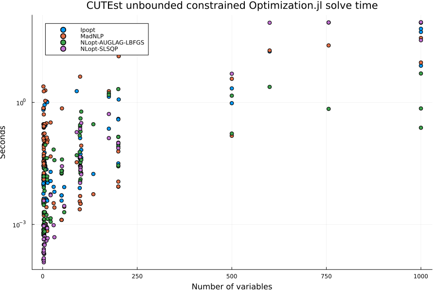
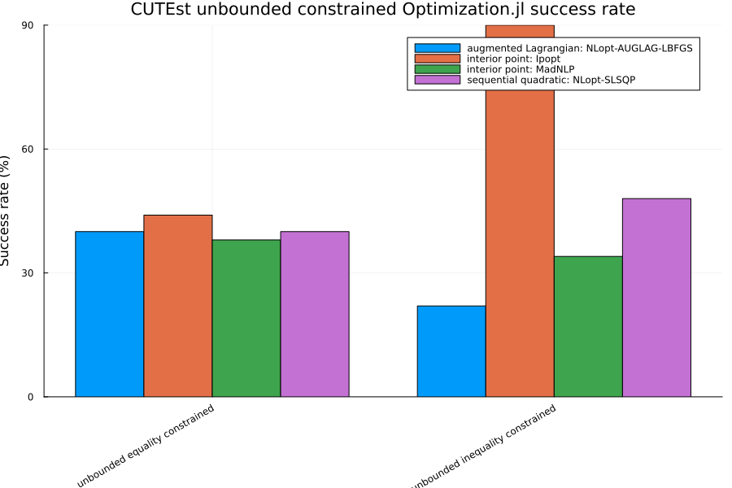
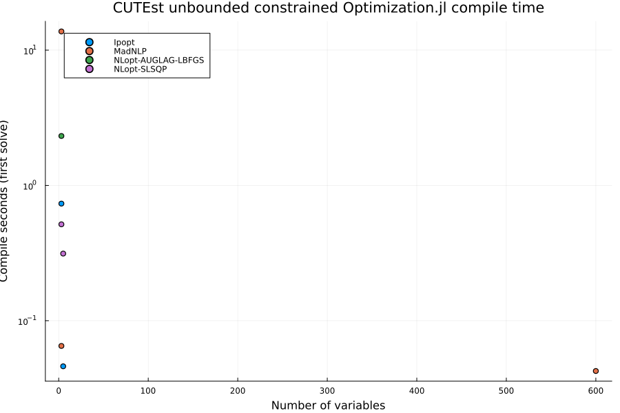
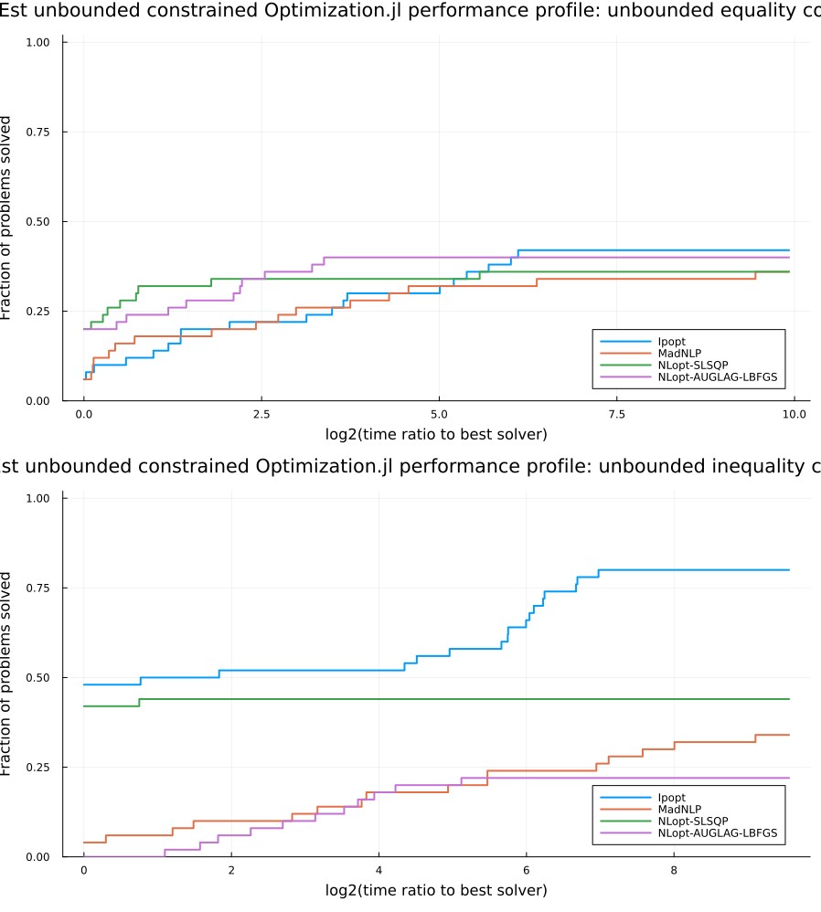
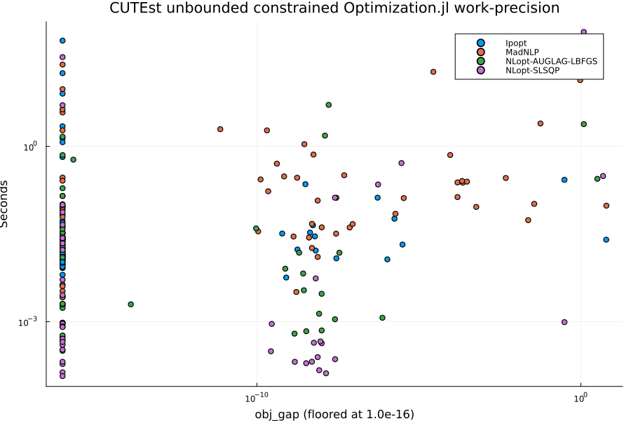

CUTEst Unbounded Constrained Optimization.jl Benchmarks
This benchmark runs constrained problems with free variables from the CUTEst test set through the Optimization.jl interface using OptimizationNLPModels. Two candidate pools are used:
- equality constrained:
CUTEst.select_sif_problems(min_con = 1, only_equ_con = true, only_free_var = true) - inequality constrained:
CUTEst.select_sif_problems(min_con = 1, only_ineq_con = true, only_free_var = true)
min_con = 1 requires at least one general (linear or nonlinear) constraint, only_equ_con keeps problems whose constraints are all equalities, only_ineq_con keeps problems with no equality constraints, and only_free_var = true keeps only problems in which every variable is free (no lower or upper bounds). The companion CUTEst_bounded page includes problems with at least one bounded variable, so the two pages have disjoint variable-bound categories that cover their eligible equality and inequality pools.
All four CUTEst pages in this folder share the harness in cutest_benchmark_utils.jl, which defines the selection constants, the solver constructors, the run loop, and the summary and plotting helpers. The prose below describes the harness as it stands; refinements to the solver sets, solution-quality metrics, performance profiles, problem selection, and timing methodology are tracked in SciMLBenchmarks#1857.
Setup
ENV["GKSwstype"] = "100"
using CUTEst
using DataFrames
using Plots
using StatsPlots
using StatsBase: countmap
using Statistics
using Printf
include(joinpath(isdefined(Main, :WEAVE_ARGS) ? WEAVE_ARGS[:folder] : @__DIR__,
"cutest_benchmark_utils.jl"))plot_work_precision (generic function with 1 method)Problem selection
select_safe_problems sorts candidate names, filters the measured skip map and size limits, then selects up to MAX_PROBLEMS_PER_CATEGORY across the 1–10, 11–100, and 101–MAX_NVAR variable buckets. It samples each name-sorted bucket evenly, redistributing quotas when a bucket has fewer candidates. Size strata come from CUTEst's public selection filters. The selected and eligible counts are printed per bucket.
println("MAX_PROBLEMS_PER_CATEGORY = ", MAX_PROBLEMS_PER_CATEGORY)
println("MAX_NVAR = ", MAX_NVAR)
println("MAX_NCON = ", MAX_NCON)
println("SOLVE_MAXITERS = ", SOLVE_MAXITERS)
println("SOLVE_TIMEOUT_SECONDS = ", SOLVE_TIMEOUT_SECONDS)
println("KNOWN_BAD_PROBLEMS = ", join(sort(collect(keys(KNOWN_BAD_PROBLEMS))), ", "))
all_equality_candidates = collect(CUTEst.select_sif_problems(min_con = 1,
only_equ_con = true, max_var = MAX_NVAR, max_con = MAX_NCON))
bounded_equality_candidates = collect(CUTEst.select_sif_problems(min_con = 1,
only_equ_con = true, max_var = MAX_NVAR, max_con = MAX_NCON,
custom_filter = p -> p["variables"]["free"] < p["variables"]["number"]))
free_equality_candidates = collect(CUTEst.select_sif_problems(min_con = 1,
only_equ_con = true, only_free_var = true, max_var = MAX_NVAR, max_con = MAX_NCON))
assert_bounded_pool_coverage(all_equality_candidates, bounded_equality_candidates,
free_equality_candidates, "Equality")
all_inequality_candidates = collect(CUTEst.select_sif_problems(min_con = 1,
only_ineq_con = true, max_var = MAX_NVAR, max_con = MAX_NCON))
bounded_inequality_candidates = collect(CUTEst.select_sif_problems(min_con = 1,
only_ineq_con = true, max_var = MAX_NVAR, max_con = MAX_NCON,
custom_filter = p -> p["variables"]["free"] < p["variables"]["number"]))
free_inequality_candidates = collect(CUTEst.select_sif_problems(min_con = 1,
only_ineq_con = true, only_free_var = true, max_var = MAX_NVAR, max_con = MAX_NCON))
assert_bounded_pool_coverage(all_inequality_candidates, bounded_inequality_candidates,
free_inequality_candidates, "Inequality")
unbounded_equality_problems = select_safe_problems(free_equality_candidates)
unbounded_inequality_problems = select_safe_problems(free_inequality_candidates)
println("Selected unbounded equality-constrained problems: ",
length(unbounded_equality_problems))
println(join(unbounded_equality_problems, ", "))
println("Selected unbounded inequality-constrained problems: ",
length(unbounded_inequality_problems))
println(join(unbounded_inequality_problems, ", "))MAX_PROBLEMS_PER_CATEGORY = 50
MAX_NVAR = 1000
MAX_NCON = 1000
SOLVE_MAXITERS = 1000
SOLVE_TIMEOUT_SECONDS = 90.0
KNOWN_BAD_PROBLEMS =
Equality eligible candidates: all=350, bounded=156, free=194
Inequality eligible candidates: all=166, bounded=103, free=63
Selected 50 of 194 eligible problems (selected/eligible per bucket): 1-10 v
ars: 18/151, 11-100 vars: 17/28, 101-1000 vars: 15/15
Selected 50 of 63 eligible problems (selected/eligible per bucket): 1-10 va
rs: 39/52, 11-100 vars: 8/8, 101-1000 vars: 3/3
Selected unbounded equality-constrained problems: 50
ARGAUSS, BROWNDENE, BT6, CERI651D, DENSCHNBNE, EGGCRATENE, GAUSS2, HATFLDF,
HIMMELBFNE, HS42, HS6, JENSMPNE, MARATOS, MISRA1C, PENLT2NE, RAT43, STRTCH
DVNE, ZANGWIL3, BA-L1, CHNRSBNE, CHNRSNBMNE, ERRINRSMNE, HYDCAR20, HYDCAR6,
LUKSAN11, LUKSAN13, LUKSAN14, LUKSAN16, LUKSAN21, MANCINONE, METHANB8, MSS
1, OSBORNE2, QINGNE, WATSONNE, 10FOLDTR, ARGLALE, ARGLBLE, ARGLCLE, ARGTRIG
, ARWHDNE, BROWNALE, CHANDHEU, COATINGNE, ELEC, EXTROSNBNE, KSS, MSS2, SPIN
2, SPIN2OP
Selected unbounded inequality-constrained problems: 50
CB2, CB3, CHACONN2, CONGIGMZ, DEMYMALO, ELATTAR, EXPFITA, EXPFITB, GIGOMEZ1
, GIGOMEZ2, GIGOMEZ3, HS10, HS100, HS100MOD, HS113, HS12, HS22, HS29, HS43,
HS88, HS90, HS91, KIWCRESC, MADSEN, MAKELA1, MIFFLIN1, MIFFLIN2, MINMAXBD,
PENTAGON, POLAK1, POLAK4, POLAK6, PT, ROSENMMX, SNAKE, SPIRAL, TFI1, TFI3,
WOMFLET, GOFFIN, HAIFAM, HAIFAS, LHAIFAM, MAKELA3, MAKELA4, POLAK2, POLAK3
, GMNCASE1, GMNCASE4, MADSSCHJSolvers
CONSTRAINED_SOLVERS currently contains only Ipopt, run through OptimizationMOI. It is the only optimizer wired into the harness that accepts general equality and inequality constraints via Optimization.jl; the Optim.jl algorithms on the unconstrained page do not. Ipopt is configured with max_iter = SOLVE_MAXITERS, max_wall_time = SOLVE_TIMEOUT_SECONDS, tol = 1.0e-6, print_level = 0, and hessian_approximation = "limited-memory". The limited-memory setting is used because OptimizationNLPModels supplies the objective gradient and Hessian and the constraint values and Jacobian from the CUTEst model, but not the constraint Hessians needed for an exact Hessian of the Lagrangian. The same iteration and time limits are also passed to solve as maxiters and maxtime. Adding further constrained backends and an exact-Hessian Ipopt variant is item 1 of #1857.
Run
Each (problem, solver) pair is solved once by run_single_solve. A row records the return code as reported by Optimization.jl and a status of OK when solve returned, FAILED when it threw, or LOAD_FAILED when the CUTEst problem could not be constructed. The reported time is sol.stats.time when the solver provides a finite, non-negative value, and otherwise the wall-clock time measured around problem construction and solve together. run_benchmarks errors if a category yields no OK rows, so a broken environment fails the build instead of producing an empty page.
unbounded_results = vcat(
run_benchmarks("unbounded equality constrained", unbounded_equality_problems,
CONSTRAINED_SOLVERS),
run_benchmarks("unbounded inequality constrained", unbounded_inequality_problems,
CONSTRAINED_SOLVERS),
)
display(unbounded_results)Warming up solvers (JIT), results are not benchmarked:
Ipopt HS35
***************************************************************************
***
This program contains Ipopt, a library for large-scale nonlinear optimizati
on.
Ipopt is released as open source code under the Eclipse Public License (EP
L).
For more information visit https://github.com/coin-or/Ipopt
***************************************************************************
***
OK Success first 20.263s compile 20.243s clean 0.011s (total 23.160s)
MadNLP HS35 OK Success first 18.738s comp
ile 18.671s clean 0.063s (total 19.168s)
NLopt-SLSQP HS35 CUTEst solve skipped for HS35
with NLopt-SLSQP: constraint bounds are not of the cons(x) <= 0 / cons(x) =
= 0 form that OptimizationNLopt passes to NLopt
SKIPPED SKIPPED first 0.000s compile 0.000s clean 0.000s (total 0.271s)
NLopt-AUGLAG-LBFGS HS35 CUTEst solve skipped for HS35
with NLopt-AUGLAG-LBFGS: constraint bounds are not of the cons(x) <= 0 / co
ns(x) == 0 form that OptimizationNLopt passes to NLopt
SKIPPED SKIPPED first 0.000s compile 0.000s clean 0.000s (total 0.273s)
Running unbounded equality constrained benchmarks
Problems: 50
Solvers: Ipopt, MadNLP, NLopt-SLSQP, NLopt-AUGLAG-LBFGS
Per-solve time cap: 90.0 s
Ipopt ARGAUSS OK Failure 0.003s (first 0.73
9s, compile 0.734s, decode 0.284s)
MadNLP ARGAUSS OK Infeasible 0.002s (first 1
3.758s, compile 13.755s, decode 0.275s)
NLopt-SLSQP ARGAUSS CUTEst solve skipped for ARGAU
SS with NLopt-SLSQP: SLSQP supports at most nvar equality constraints
SKIPPED SKIPPED 0.000s (first 0.000s, compile 0.000s, decode 0.285s)
NLopt-AUGLAG-LBFGS ARGAUSS OK Failure 0.001s (first 2.34
8s, compile 2.321s, decode 0.268s)
Ipopt BROWNDENE OK Failure 0.004s (first 0.00
5s, compile 0.000s, decode 0.276s)
MadNLP BROWNDENE OK Infeasible 0.001s (first 0
.001s, compile 0.000s, decode 0.275s)
NLopt-SLSQP BROWNDENE CUTEst solve skipped for BROWN
DENE with NLopt-SLSQP: SLSQP supports at most nvar equality constraints
SKIPPED SKIPPED 0.000s (first 0.000s, compile 0.000s, decode 0.270s)
NLopt-AUGLAG-LBFGS BROWNDENE OK Failure 0.001s (first 0.00
2s, compile 0.000s, decode 0.275s)
Ipopt BT6 OK Success 0.017s (first 0.06
6s, compile 0.046s, decode 0.294s)
MadNLP BT6 OK Success 0.027s (first 0.02
9s, compile 0.000s, decode 0.305s)
NLopt-SLSQP BT6 OK Success 0.000s (first 0.31
4s, compile 0.313s, decode 0.310s)
NLopt-AUGLAG-LBFGS BT6 OK Success 0.003s (first 0.00
4s, compile 0.000s, decode 0.294s)
Ipopt CERI651D OK Failure 0.004s (first 0.00
5s, compile 0.000s, decode 0.322s)
MadNLP CERI651D OK Infeasible 0.001s (first 0
.001s, compile 0.000s, decode 0.320s)
NLopt-SLSQP CERI651D CUTEst solve skipped for CERI6
51D with NLopt-SLSQP: SLSQP supports at most nvar equality constraints
SKIPPED SKIPPED 0.000s (first 0.000s, compile 0.000s, decode 0.328s)
NLopt-AUGLAG-LBFGS CERI651D OK MaxIters 0.090s (first 0.0
62s, compile 0.000s, decode 0.328s)
Ipopt DENSCHNBNE OK Failure 0.004s (first 0.00
5s, compile 0.000s, decode 0.272s)
MadNLP DENSCHNBNE OK Infeasible 0.001s (first 0
.001s, compile 0.000s, decode 0.271s)
NLopt-SLSQP DENSCHNBNE CUTEst solve skipped for DENSC
HNBNE with NLopt-SLSQP: SLSQP supports at most nvar equality constraints
SKIPPED SKIPPED 0.000s (first 0.000s, compile 0.000s, decode 0.273s)
NLopt-AUGLAG-LBFGS DENSCHNBNE OK Success 0.001s (first 0.00
1s, compile 0.000s, decode 0.261s)
Ipopt EGGCRATENE OK Failure 0.004s (first 0.00
4s, compile 0.000s, decode 0.269s)
MadNLP EGGCRATENE OK Infeasible 0.001s (first 0
.001s, compile 0.000s, decode 0.268s)
NLopt-SLSQP EGGCRATENE CUTEst solve skipped for EGGCR
ATENE with NLopt-SLSQP: SLSQP supports at most nvar equality constraints
SKIPPED SKIPPED 0.000s (first 0.000s, compile 0.000s, decode 0.280s)
NLopt-AUGLAG-LBFGS EGGCRATENE OK Failure 0.001s (first 0.00
1s, compile 0.000s, decode 0.273s)
Ipopt GAUSS2 OK Failure 0.004s (first 0.00
5s, compile 0.000s, decode 0.305s)
MadNLP GAUSS2 OK Infeasible 0.001s (first 0
.001s, compile 0.000s, decode 0.305s)
NLopt-SLSQP GAUSS2 CUTEst solve skipped for GAUSS
2 with NLopt-SLSQP: SLSQP supports at most nvar equality constraints
SKIPPED SKIPPED 0.000s (first 0.000s, compile 0.000s, decode 0.297s)
NLopt-AUGLAG-LBFGS GAUSS2 OK Failure 0.042s (first 0.09
1s, compile 0.000s, decode 0.303s)
Ipopt HATFLDF OK Infeasible 0.038s (first 0
.061s, compile 0.000s, decode 0.281s)
MadNLP HATFLDF OK MaxIters 0.090s (first 0.1
63s, compile 0.065s, decode 0.281s)
NLopt-SLSQP HATFLDF OK MaxIters 0.004s (first 0.0
04s, compile 0.000s, decode 0.277s)
NLopt-AUGLAG-LBFGS HATFLDF OK Success 0.002s (first 0.00
2s, compile 0.000s, decode 0.277s)
Ipopt HIMMELBFNE OK Failure 0.004s (first 0.00
5s, compile 0.000s, decode 0.265s)
MadNLP HIMMELBFNE OK Infeasible 0.001s (first 0
.001s, compile 0.000s, decode 0.266s)
NLopt-SLSQP HIMMELBFNE CUTEst solve skipped for HIMME
LBFNE with NLopt-SLSQP: SLSQP supports at most nvar equality constraints
SKIPPED SKIPPED 0.000s (first 0.000s, compile 0.000s, decode 0.268s)
NLopt-AUGLAG-LBFGS HIMMELBFNE OK Failure 0.001s (first 0.00
1s, compile 0.000s, decode 0.278s)
Ipopt HS42 OK Success 0.012s (first 0.01
3s, compile 0.000s, decode 0.274s)
MadNLP HS42 OK Success 0.132s (first 0.15
7s, compile 0.000s, decode 0.275s)
NLopt-SLSQP HS42 OK Success 0.000s (first 0.00
0s, compile 0.000s, decode 0.271s)
NLopt-AUGLAG-LBFGS HS42 OK Success 0.001s (first 0.00
1s, compile 0.000s, decode 0.273s)
Ipopt HS6 OK Success 0.014s (first 0.02
2s, compile 0.000s, decode 0.264s)
MadNLP HS6 OK Success 0.004s (first 0.00
5s, compile 0.000s, decode 0.274s)
NLopt-SLSQP HS6 OK Success 0.000s (first 0.00
1s, compile 0.000s, decode 0.275s)
NLopt-AUGLAG-LBFGS HS6 OK Success 0.001s (first 0.00
1s, compile 0.000s, decode 0.268s)
Ipopt JENSMPNE OK Failure 0.004s (first 0.00
4s, compile 0.000s, decode 0.280s)
MadNLP JENSMPNE OK Infeasible 0.001s (first 0
.001s, compile 0.000s, decode 0.273s)
NLopt-SLSQP JENSMPNE CUTEst solve skipped for JENSM
PNE with NLopt-SLSQP: SLSQP supports at most nvar equality constraints
SKIPPED SKIPPED 0.000s (first 0.000s, compile 0.000s, decode 0.270s)
NLopt-AUGLAG-LBFGS JENSMPNE OK Failure 0.001s (first 0.00
1s, compile 0.000s, decode 0.285s)
Ipopt MARATOS OK Success 0.006s (first 0.00
7s, compile 0.000s, decode 0.258s)
MadNLP MARATOS OK Success 0.003s (first 0.00
4s, compile 0.000s, decode 0.270s)
NLopt-SLSQP MARATOS OK Success 0.000s (first 0.00
0s, compile 0.000s, decode 0.268s)
NLopt-AUGLAG-LBFGS MARATOS OK Success 0.001s (first 0.00
1s, compile 0.000s, decode 0.266s)
Ipopt MISRA1C OK Failure 0.004s (first 0.00
4s, compile 0.000s, decode 0.263s)
MadNLP MISRA1C OK Infeasible 0.001s (first 0
.001s, compile 0.000s, decode 0.268s)
NLopt-SLSQP MISRA1C CUTEst solve skipped for MISRA
1C with NLopt-SLSQP: SLSQP supports at most nvar equality constraints
SKIPPED SKIPPED 0.000s (first 0.000s, compile 0.000s, decode 0.264s)
NLopt-AUGLAG-LBFGS MISRA1C OK Failure 0.004s (first 0.00
4s, compile 0.000s, decode 0.269s)
Ipopt PENLT2NE OK Failure 0.004s (first 0.00
4s, compile 0.000s, decode 0.276s)
MadNLP PENLT2NE OK Infeasible 0.001s (first 0
.001s, compile 0.000s, decode 0.282s)
NLopt-SLSQP PENLT2NE CUTEst solve skipped for PENLT
2NE with NLopt-SLSQP: SLSQP supports at most nvar equality constraints
SKIPPED SKIPPED 0.000s (first 0.000s, compile 0.000s, decode 0.279s)
NLopt-AUGLAG-LBFGS PENLT2NE OK MaxIters 0.024s (first 0.0
24s, compile 0.000s, decode 0.277s)
Ipopt RAT43 OK Failure 0.004s (first 0.00
5s, compile 0.000s, decode 0.295s)
MadNLP RAT43 OK Infeasible 0.001s (first 0
.001s, compile 0.000s, decode 0.285s)
NLopt-SLSQP RAT43 CUTEst solve skipped for RAT43
with NLopt-SLSQP: SLSQP supports at most nvar equality constraints
SKIPPED SKIPPED 0.000s (first 0.000s, compile 0.000s, decode 0.291s)
NLopt-AUGLAG-LBFGS RAT43 OK Failure 0.001s (first 0.00
2s, compile 0.000s, decode 0.280s)
Ipopt STRTCHDVNE OK Success 0.013s (first 0.01
4s, compile 0.000s, decode 0.286s)
MadNLP STRTCHDVNE OK Success 0.003s (first 0.00
3s, compile 0.000s, decode 0.302s)
NLopt-SLSQP STRTCHDVNE OK Success 0.000s (first 0.00
1s, compile 0.000s, decode 0.293s)
NLopt-AUGLAG-LBFGS STRTCHDVNE OK Success 0.002s (first 0.00
2s, compile 0.000s, decode 0.295s)
Ipopt ZANGWIL3 OK Success 0.004s (first 0.00
5s, compile 0.000s, decode 0.250s)
MadNLP ZANGWIL3 OK Success 0.001s (first 0.00
1s, compile 0.000s, decode 0.252s)
NLopt-SLSQP ZANGWIL3 OK Success 0.000s (first 0.00
0s, compile 0.000s, decode 0.253s)
NLopt-AUGLAG-LBFGS ZANGWIL3 OK Success 0.000s (first 0.00
1s, compile 0.000s, decode 0.249s)
Ipopt BA-L1 OK Success 0.008s (first 0.00
9s, compile 0.000s, decode 0.830s)
MadNLP BA-L1 OK Success 0.003s (first 0.00
3s, compile 0.000s, decode 0.823s)
NLopt-SLSQP BA-L1 OK Success 0.003s (first 0.00
3s, compile 0.000s, decode 0.820s)
NLopt-AUGLAG-LBFGS BA-L1 OK Success 0.002s (first 0.00
2s, compile 0.000s, decode 0.828s)
Ipopt CHNRSBNE OK Failure 0.004s (first 0.00
5s, compile 0.000s, decode 0.279s)
MadNLP CHNRSBNE OK Infeasible 0.001s (first 0
.002s, compile 0.000s, decode 0.275s)
NLopt-SLSQP CHNRSBNE CUTEst solve skipped for CHNRS
BNE with NLopt-SLSQP: SLSQP supports at most nvar equality constraints
SKIPPED SKIPPED 0.000s (first 0.000s, compile 0.000s, decode 0.275s)
NLopt-AUGLAG-LBFGS CHNRSBNE OK Success 0.018s (first 0.11
1s, compile 0.000s, decode 0.280s)
Ipopt CHNRSNBMNE OK Failure 0.005s (first 0.00
6s, compile 0.000s, decode 0.276s)
MadNLP CHNRSNBMNE OK Infeasible 0.001s (first 0
.002s, compile 0.000s, decode 0.269s)
NLopt-SLSQP CHNRSNBMNE CUTEst solve skipped for CHNRS
NBMNE with NLopt-SLSQP: SLSQP supports at most nvar equality constraints
SKIPPED SKIPPED 0.000s (first 0.000s, compile 0.000s, decode 0.266s)
NLopt-AUGLAG-LBFGS CHNRSNBMNE OK Success 0.019s (first 0.18
5s, compile 0.000s, decode 0.273s)
Ipopt ERRINRSMNE OK Failure 0.005s (first 0.00
7s, compile 0.000s, decode 0.268s)
MadNLP ERRINRSMNE OK Infeasible 0.001s (first 0
.002s, compile 0.000s, decode 0.272s)
NLopt-SLSQP ERRINRSMNE CUTEst solve skipped for ERRIN
RSMNE with NLopt-SLSQP: SLSQP supports at most nvar equality constraints
SKIPPED SKIPPED 0.000s (first 0.000s, compile 0.000s, decode 0.263s)
NLopt-AUGLAG-LBFGS ERRINRSMNE OK Failure 0.021s (first 0.23
6s, compile 0.000s, decode 0.268s)
Ipopt HYDCAR20 OK Success 0.028s (first 0.03
6s, compile 0.000s, decode 0.356s)
MadNLP HYDCAR20 OK Success 0.027s (first 0.03
2s, compile 0.000s, decode 0.352s)
NLopt-SLSQP HYDCAR20 OK Success 0.046s (first 0.06
5s, compile 0.000s, decode 0.354s)
NLopt-AUGLAG-LBFGS HYDCAR20 OK MaxIters 0.251s (first 0.2
94s, compile 0.000s, decode 0.353s)
Ipopt HYDCAR6 OK Success 0.008s (first 0.01
1s, compile 0.000s, decode 0.333s)
MadNLP HYDCAR6 OK Success 0.003s (first 0.00
5s, compile 0.000s, decode 0.325s)
NLopt-SLSQP HYDCAR6 OK Success 0.001s (first 0.00
1s, compile 0.000s, decode 0.330s)
NLopt-AUGLAG-LBFGS HYDCAR6 OK MaxIters 0.069s (first 0.1
15s, compile 0.000s, decode 0.331s)
Ipopt LUKSAN11 OK Failure 0.038s (first 0.01
4s, compile 0.000s, decode 0.286s)
MadNLP LUKSAN11 OK Infeasible 0.003s (first 0
.004s, compile 0.000s, decode 0.277s)
NLopt-SLSQP LUKSAN11 CUTEst solve skipped for LUKSA
N11 with NLopt-SLSQP: SLSQP supports at most nvar equality constraints
SKIPPED SKIPPED 0.000s (first 0.000s, compile 0.000s, decode 0.280s)
NLopt-AUGLAG-LBFGS LUKSAN11 OK MaxIters 0.403s (first 0.4
39s, compile 0.000s, decode 0.274s)
Ipopt LUKSAN13 OK Failure 0.043s (first 0.01
3s, compile 0.000s, decode 0.289s)
MadNLP LUKSAN13 OK Infeasible 0.004s (first 0
.004s, compile 0.000s, decode 0.281s)
NLopt-SLSQP LUKSAN13 CUTEst solve skipped for LUKSA
N13 with NLopt-SLSQP: SLSQP supports at most nvar equality constraints
SKIPPED SKIPPED 0.000s (first 0.000s, compile 0.000s, decode 0.276s)
NLopt-AUGLAG-LBFGS LUKSAN13 OK Failure 0.154s (first 0.24
5s, compile 0.000s, decode 0.282s)
Ipopt LUKSAN14 OK Failure 0.008s (first 0.00
9s, compile 0.000s, decode 0.261s)
MadNLP LUKSAN14 OK Infeasible 0.002s (first 0
.003s, compile 0.000s, decode 0.264s)
NLopt-SLSQP LUKSAN14 CUTEst solve skipped for LUKSA
N14 with NLopt-SLSQP: SLSQP supports at most nvar equality constraints
SKIPPED SKIPPED 0.000s (first 0.000s, compile 0.000s, decode 0.269s)
NLopt-AUGLAG-LBFGS LUKSAN14 OK Failure 0.060s (first 0.09
6s, compile 0.000s, decode 0.273s)
Ipopt LUKSAN16 OK Failure 0.041s (first 0.01
3s, compile 0.000s, decode 0.297s)
MadNLP LUKSAN16 OK Infeasible 0.003s (first 0
.004s, compile 0.000s, decode 0.294s)
NLopt-SLSQP LUKSAN16 CUTEst solve skipped for LUKSA
N16 with NLopt-SLSQP: SLSQP supports at most nvar equality constraints
SKIPPED SKIPPED 0.000s (first 0.000s, compile 0.000s, decode 0.302s)
NLopt-AUGLAG-LBFGS LUKSAN16 OK Failure 0.018s (first 0.01
9s, compile 0.000s, decode 0.302s)
Ipopt LUKSAN21 OK Success 0.053s (first 0.02
8s, compile 0.000s, decode 0.286s)
MadNLP LUKSAN21 OK Success 0.021s (first 0.02
1s, compile 0.000s, decode 0.275s)
NLopt-SLSQP LUKSAN21 OK Success 0.026s (first 0.02
7s, compile 0.000s, decode 0.279s)
NLopt-AUGLAG-LBFGS LUKSAN21 OK Success 0.192s (first 0.15
0s, compile 0.000s, decode 0.272s)
Ipopt MANCINONE OK Success 0.027s (first 0.03
4s, compile 0.000s, decode 0.537s)
MadNLP MANCINONE OK Success 0.027s (first 0.03
3s, compile 0.000s, decode 0.528s)
NLopt-SLSQP MANCINONE OK Success 0.024s (first 0.03
0s, compile 0.000s, decode 0.533s)
NLopt-AUGLAG-LBFGS MANCINONE OK Success 0.034s (first 0.07
2s, compile 0.000s, decode 0.528s)
Ipopt METHANB8 OK Success 0.006s (first 0.00
8s, compile 0.000s, decode 0.335s)
MadNLP METHANB8 OK Success 0.003s (first 0.00
3s, compile 0.000s, decode 0.330s)
NLopt-SLSQP METHANB8 OK Success 0.000s (first 0.00
1s, compile 0.000s, decode 0.330s)
NLopt-AUGLAG-LBFGS METHANB8 OK MaxIters 0.038s (first 0.0
53s, compile 0.000s, decode 0.332s)
Ipopt MSS1 OK MaxIters 1.887s (first 1.9
54s, compile 0.000s, decode 0.280s)
MadNLP MSS1 OK Infeasible 0.034s (first 0
.050s, compile 0.000s, decode 0.295s)
NLopt-SLSQP MSS1 OK Success 0.185s (first 0.24
6s, compile 0.000s, decode 0.290s)
NLopt-AUGLAG-LBFGS MSS1 OK Failure 0.050s (first 0.01
7s, compile 0.000s, decode 0.290s)
Ipopt OSBORNE2 OK Failure 0.004s (first 0.00
6s, compile 0.000s, decode 0.295s)
MadNLP OSBORNE2 OK Infeasible 0.001s (first 0
.001s, compile 0.000s, decode 0.288s)
NLopt-SLSQP OSBORNE2 CUTEst solve skipped for OSBOR
NE2 with NLopt-SLSQP: SLSQP supports at most nvar equality constraints
SKIPPED SKIPPED 0.000s (first 0.000s, compile 0.000s, decode 0.297s)
NLopt-AUGLAG-LBFGS OSBORNE2 OK Failure 0.043s (first 0.01
6s, compile 0.000s, decode 0.286s)
Ipopt QINGNE OK Success 0.025s (first 0.02
9s, compile 0.000s, decode 0.274s)
MadNLP QINGNE OK Success 0.021s (first 0.02
1s, compile 0.000s, decode 0.271s)
NLopt-SLSQP QINGNE OK Success 0.022s (first 0.02
2s, compile 0.000s, decode 0.268s)
NLopt-AUGLAG-LBFGS QINGNE OK Success 0.013s (first 0.04
7s, compile 0.000s, decode 0.270s)
Ipopt WATSONNE OK Failure 0.004s (first 0.00
5s, compile 0.000s, decode 0.346s)
MadNLP WATSONNE OK Infeasible 0.001s (first 0
.001s, compile 0.000s, decode 0.346s)
NLopt-SLSQP WATSONNE CUTEst solve skipped for WATSO
NNE with NLopt-SLSQP: SLSQP supports at most nvar equality constraints
SKIPPED SKIPPED 0.000s (first 0.000s, compile 0.000s, decode 0.350s)
NLopt-AUGLAG-LBFGS WATSONNE OK Success 0.013s (first 0.01
3s, compile 0.000s, decode 0.346s)
Ipopt 10FOLDTR OK Success 53.686s (first 57.
047s, compile 0.000s, decode 2.250s)
MadNLP 10FOLDTR OK Success 38.222s (first 36.
661s, compile 0.000s, decode 2.163s)
NLopt-SLSQP 10FOLDTR [rerun skipped: first run end
ed with MaxTime] OK MaxTime 91.878s (first 91.878s, compile 0.000s, decode
2.184s)
NLopt-AUGLAG-LBFGS 10FOLDTR OK Failure 0.238s (first 0.26
0s, compile 0.000s, decode 2.177s)
Ipopt ARGLALE OK Failure 0.032s (first 0.04
9s, compile 0.000s, decode 0.598s)
MadNLP ARGLALE OK Infeasible 0.008s (first 0
.010s, compile 0.000s, decode 0.590s)
NLopt-SLSQP ARGLALE CUTEst solve skipped for ARGLA
LE with NLopt-SLSQP: SLSQP supports at most nvar equality constraints
SKIPPED SKIPPED 0.000s (first 0.000s, compile 0.000s, decode 0.594s)
NLopt-AUGLAG-LBFGS ARGLALE OK Failure 0.082s (first 0.10
6s, compile 0.000s, decode 0.600s)
Ipopt ARGLBLE OK Failure 0.393s (first 0.07
3s, compile 0.000s, decode 0.595s)
MadNLP ARGLBLE OK Infeasible 0.009s (first 0
.009s, compile 0.000s, decode 0.589s)
NLopt-SLSQP ARGLBLE CUTEst solve skipped for ARGLB
LE with NLopt-SLSQP: SLSQP supports at most nvar equality constraints
SKIPPED SKIPPED 0.000s (first 0.000s, compile 0.000s, decode 0.597s)
NLopt-AUGLAG-LBFGS ARGLBLE OK Failure 0.027s (first 0.03
0s, compile 0.000s, decode 0.583s)
Ipopt ARGLCLE OK Failure 0.380s (first 0.02
9s, compile 0.000s, decode 0.583s)
MadNLP ARGLCLE OK Infeasible 0.011s (first 0
.010s, compile 0.000s, decode 0.568s)
NLopt-SLSQP ARGLCLE CUTEst solve skipped for ARGLC
LE with NLopt-SLSQP: SLSQP supports at most nvar equality constraints
SKIPPED SKIPPED 0.000s (first 0.000s, compile 0.000s, decode 0.564s)
NLopt-AUGLAG-LBFGS ARGLCLE OK Failure 0.028s (first 0.06
5s, compile 0.000s, decode 0.586s)
Ipopt ARGTRIG OK Success 0.142s (first 0.08
6s, compile 0.000s, decode 0.457s)
MadNLP ARGTRIG OK Success 0.062s (first 0.06
7s, compile 0.000s, decode 0.464s)
NLopt-SLSQP ARGTRIG OK Success 0.075s (first 0.07
7s, compile 0.000s, decode 0.451s)
NLopt-AUGLAG-LBFGS ARGTRIG OK MaxIters 2.120s (first 2.4
00s, compile 0.000s, decode 0.464s)
Ipopt ARWHDNE OK Failure 0.954s (first 1.20
8s, compile 0.000s, decode 0.287s)
MadNLP ARWHDNE OK Infeasible 0.151s (first 0
.084s, compile 0.000s, decode 0.287s)
NLopt-SLSQP ARWHDNE CUTEst solve skipped for ARWHD
NE with NLopt-SLSQP: SLSQP supports at most nvar equality constraints
SKIPPED SKIPPED 0.000s (first 0.000s, compile 0.000s, decode 0.295s)
NLopt-AUGLAG-LBFGS ARWHDNE OK Failure 0.171s (first 0.34
7s, compile 0.000s, decode 0.280s)
Ipopt BROWNALE OK Success 0.094s (first 0.12
6s, compile 0.000s, decode 0.462s)
MadNLP BROWNALE OK Success 0.102s (first 0.21
6s, compile 0.000s, decode 0.472s)
NLopt-SLSQP BROWNALE OK Success 0.100s (first 0.10
7s, compile 0.000s, decode 0.459s)
NLopt-AUGLAG-LBFGS BROWNALE OK Success 0.142s (first 0.26
1s, compile 0.000s, decode 0.459s)
Ipopt CHANDHEU OK Success 2.203s (first 2.29
4s, compile 0.000s, decode 6.168s)
MadNLP CHANDHEU OK Infeasible 3.795s (first 3
.869s, compile 0.000s, decode 6.266s)
NLopt-SLSQP CHANDHEU OK Success 5.055s (first 5.20
6s, compile 0.000s, decode 6.226s)
NLopt-AUGLAG-LBFGS CHANDHEU OK Success 1.461s (first 1.51
1s, compile 0.000s, decode 6.316s)
Ipopt COATINGNE OK Failure 0.017s (first 0.03
6s, compile 0.000s, decode 0.289s)
MadNLP COATINGNE OK Infeasible 0.006s (first 0
.006s, compile 0.000s, decode 0.296s)
NLopt-SLSQP COATINGNE CUTEst solve skipped for COATI
NGNE with NLopt-SLSQP: SLSQP supports at most nvar equality constraints
SKIPPED SKIPPED 0.000s (first 0.000s, compile 0.000s, decode 0.287s)
NLopt-AUGLAG-LBFGS COATINGNE OK MaxIters 0.290s (first 0.5
16s, compile 0.000s, decode 0.288s)
Ipopt ELEC OK Success 17.848s (first 17.
416s, compile 0.000s, decode 0.976s)
MadNLP ELEC OK MaxIters 18.834s (first 19
.215s, compile 0.042s, decode 0.968s)
NLopt-SLSQP ELEC [rerun skipped: first run end
ed with MaxTime] OK MaxTime 90.489s (first 90.489s, compile 0.000s, decode
0.964s)
NLopt-AUGLAG-LBFGS ELEC OK MaxIters 2.399s (first 2.5
21s, compile 0.000s, decode 0.973s)
Ipopt EXTROSNBNE OK Success 64.393s (first 66.
182s, compile 0.000s, decode 0.303s)
MadNLP EXTROSNBNE [rerun skipped: first run end
ed with MaxTime] OK MaxTime 90.849s (first 90.849s, compile 0.000s, decode
0.301s)
NLopt-SLSQP EXTROSNBNE [rerun skipped: first run end
ed with MaxTime] OK MaxTime 93.197s (first 93.197s, compile 0.000s, decode
0.306s)
NLopt-AUGLAG-LBFGS EXTROSNBNE OK Success 5.126s (first 5.79
0s, compile 0.000s, decode 0.307s)
Ipopt KSS OK Success 7.965s (first 10.0
19s, compile 0.000s, decode 4.008s)
MadNLP KSS OK Success 9.515s (first 10.1
39s, compile 0.000s, decode 4.031s)
NLopt-SLSQP KSS OK Success 33.624s (first 33.
539s, compile 0.000s, decode 3.985s)
NLopt-AUGLAG-LBFGS KSS OK Success 0.708s (first 0.94
0s, compile 0.000s, decode 3.999s)
Ipopt MSS2 [rerun skipped: first run end
ed with MaxTime] OK MaxTime 91.609s (first 91.609s, compile 0.000s, decode
0.325s)
MadNLP MSS2 OK Infeasible 25.059s (first
26.085s, compile 0.000s, decode 0.331s)
NLopt-SLSQP MSS2 [rerun skipped: first run end
ed with MaxTime] OK MaxTime 91.923s (first 91.923s, compile 0.000s, decode
0.329s)
NLopt-AUGLAG-LBFGS MSS2 OK Failure 0.691s (first 0.78
7s, compile 0.000s, decode 0.327s)
Ipopt SPIN2 OK Success 0.044s (first 0.03
8s, compile 0.000s, decode 0.381s)
MadNLP SPIN2 OK Success 0.018s (first 0.02
6s, compile 0.000s, decode 0.385s)
NLopt-SLSQP SPIN2 OK Success 0.017s (first 0.02
3s, compile 0.000s, decode 0.371s)
NLopt-AUGLAG-LBFGS SPIN2 OK Success 0.039s (first 0.07
8s, compile 0.000s, decode 0.370s)
Ipopt SPIN2OP OK Success 0.068s (first 0.04
8s, compile 0.000s, decode 0.382s)
MadNLP SPIN2OP OK Success 0.086s (first 0.09
1s, compile 0.000s, decode 0.373s)
NLopt-SLSQP SPIN2OP OK Success 0.311s (first 0.55
3s, compile 0.000s, decode 0.377s)
NLopt-AUGLAG-LBFGS SPIN2OP OK MaxIters 0.592s (first 1.2
51s, compile 0.000s, decode 0.371s)
unbounded equality constrained: 175/175 attempted rows completed (100.0%)
; 25 skipped; status: OK=175, SKIPPED=25
Warming up solvers (JIT), results are not benchmarked:
Ipopt HS35 OK Success first 0.020s compi
le 0.000s clean 0.016s (total 0.321s)
MadNLP HS35 OK Success first 0.090s compi
le 0.000s clean 0.067s (total 0.438s)
NLopt-SLSQP HS35 CUTEst solve skipped for HS35
with NLopt-SLSQP: constraint bounds are not of the cons(x) <= 0 / cons(x) =
= 0 form that OptimizationNLopt passes to NLopt
SKIPPED SKIPPED first 0.000s compile 0.000s clean 0.000s (total 0.262s)
NLopt-AUGLAG-LBFGS HS35 CUTEst solve skipped for HS35
with NLopt-AUGLAG-LBFGS: constraint bounds are not of the cons(x) <= 0 / co
ns(x) == 0 form that OptimizationNLopt passes to NLopt
SKIPPED SKIPPED first 0.000s compile 0.000s clean 0.000s (total 0.282s)
Running unbounded inequality constrained benchmarks
Problems: 50
Solvers: Ipopt, MadNLP, NLopt-SLSQP, NLopt-AUGLAG-LBFGS
Per-solve time cap: 90.0 s
Ipopt CB2 OK Success 0.012s (first 0.01
4s, compile 0.000s, decode 0.286s)
MadNLP CB2 OK MaxIters 0.070s (first 0.0
98s, compile 0.000s, decode 0.282s)
NLopt-SLSQP CB2 CUTEst solve skipped for CB2 w
ith NLopt-SLSQP: constraint bounds are not of the cons(x) <= 0 / cons(x) ==
0 form that OptimizationNLopt passes to NLopt
SKIPPED SKIPPED 0.000s (first 0.000s, compile 0.000s, decode 0.297s)
NLopt-AUGLAG-LBFGS CB2 CUTEst solve skipped for CB2 w
ith NLopt-AUGLAG-LBFGS: constraint bounds are not of the cons(x) <= 0 / con
s(x) == 0 form that OptimizationNLopt passes to NLopt
SKIPPED SKIPPED 0.000s (first 0.000s, compile 0.000s, decode 0.284s)
Ipopt CB3 OK Success 0.012s (first 0.01
4s, compile 0.000s, decode 0.281s)
MadNLP CB3 OK MaxIters 0.239s (first 0.2
67s, compile 0.000s, decode 0.284s)
NLopt-SLSQP CB3 CUTEst solve skipped for CB3 w
ith NLopt-SLSQP: constraint bounds are not of the cons(x) <= 0 / cons(x) ==
0 form that OptimizationNLopt passes to NLopt
SKIPPED SKIPPED 0.000s (first 0.000s, compile 0.000s, decode 0.283s)
NLopt-AUGLAG-LBFGS CB3 CUTEst solve skipped for CB3 w
ith NLopt-AUGLAG-LBFGS: constraint bounds are not of the cons(x) <= 0 / con
s(x) == 0 form that OptimizationNLopt passes to NLopt
SKIPPED SKIPPED 0.000s (first 0.000s, compile 0.000s, decode 0.291s)
Ipopt CHACONN2 OK Success 0.011s (first 0.01
3s, compile 0.000s, decode 0.283s)
MadNLP CHACONN2 OK Success 0.029s (first 0.03
4s, compile 0.000s, decode 0.282s)
NLopt-SLSQP CHACONN2 OK Success 0.000s (first 0.52
5s, compile 0.516s, decode 0.285s)
NLopt-AUGLAG-LBFGS CHACONN2 OK Failure 0.001s (first 0.00
1s, compile 0.000s, decode 0.295s)
Ipopt CONGIGMZ OK Success 0.024s (first 0.02
6s, compile 0.000s, decode 0.263s)
MadNLP CONGIGMZ OK Success 0.170s (first 0.19
6s, compile 0.000s, decode 0.273s)
NLopt-SLSQP CONGIGMZ CUTEst solve skipped for CONGI
GMZ with NLopt-SLSQP: constraint bounds are not of the cons(x) <= 0 / cons(
x) == 0 form that OptimizationNLopt passes to NLopt
SKIPPED SKIPPED 0.000s (first 0.000s, compile 0.000s, decode 0.268s)
NLopt-AUGLAG-LBFGS CONGIGMZ CUTEst solve skipped for CONGI
GMZ with NLopt-AUGLAG-LBFGS: constraint bounds are not of the cons(x) <= 0
/ cons(x) == 0 form that OptimizationNLopt passes to NLopt
SKIPPED SKIPPED 0.000s (first 0.000s, compile 0.000s, decode 0.269s)
Ipopt DEMYMALO OK Success 0.013s (first 0.01
5s, compile 0.000s, decode 0.271s)
MadNLP DEMYMALO OK MaxIters 0.241s (first 0.3
85s, compile 0.000s, decode 0.264s)
NLopt-SLSQP DEMYMALO OK Success 0.000s (first 0.00
1s, compile 0.000s, decode 0.267s)
NLopt-AUGLAG-LBFGS DEMYMALO OK Success 0.001s (first 0.00
1s, compile 0.000s, decode 0.271s)
Ipopt ELATTAR OK Success 0.268s (first 0.29
6s, compile 0.000s, decode 0.285s)
MadNLP ELATTAR OK MaxIters 0.292s (first 0.3
73s, compile 0.000s, decode 0.293s)
NLopt-SLSQP ELATTAR OK Success 0.001s (first 0.00
1s, compile 0.000s, decode 0.294s)
NLopt-AUGLAG-LBFGS ELATTAR OK Failure 0.022s (first 0.06
2s, compile 0.000s, decode 0.286s)
Ipopt EXPFITA OK Success 0.033s (first 0.05
2s, compile 0.000s, decode 0.293s)
MadNLP EXPFITA OK Success 0.041s (first 0.05
9s, compile 0.000s, decode 0.288s)
NLopt-SLSQP EXPFITA CUTEst solve skipped for EXPFI
TA with NLopt-SLSQP: constraint bounds are not of the cons(x) <= 0 / cons(x
) == 0 form that OptimizationNLopt passes to NLopt
SKIPPED SKIPPED 0.000s (first 0.000s, compile 0.000s, decode 0.285s)
NLopt-AUGLAG-LBFGS EXPFITA CUTEst solve skipped for EXPFI
TA with NLopt-AUGLAG-LBFGS: constraint bounds are not of the cons(x) <= 0 /
cons(x) == 0 form that OptimizationNLopt passes to NLopt
SKIPPED SKIPPED 0.000s (first 0.000s, compile 0.000s, decode 0.287s)
Ipopt EXPFITB OK Success 0.058s (first 0.08
3s, compile 0.000s, decode 0.294s)
MadNLP EXPFITB OK Success 0.093s (first 0.11
9s, compile 0.000s, decode 0.297s)
NLopt-SLSQP EXPFITB CUTEst solve skipped for EXPFI
TB with NLopt-SLSQP: constraint bounds are not of the cons(x) <= 0 / cons(x
) == 0 form that OptimizationNLopt passes to NLopt
SKIPPED SKIPPED 0.000s (first 0.000s, compile 0.000s, decode 0.299s)
NLopt-AUGLAG-LBFGS EXPFITB CUTEst solve skipped for EXPFI
TB with NLopt-AUGLAG-LBFGS: constraint bounds are not of the cons(x) <= 0 /
cons(x) == 0 form that OptimizationNLopt passes to NLopt
SKIPPED SKIPPED 0.000s (first 0.000s, compile 0.000s, decode 0.297s)
Ipopt GIGOMEZ1 OK Success 0.014s (first 0.01
6s, compile 0.000s, decode 0.272s)
MadNLP GIGOMEZ1 OK MaxIters 0.135s (first 0.1
60s, compile 0.000s, decode 0.271s)
NLopt-SLSQP GIGOMEZ1 CUTEst solve skipped for GIGOM
EZ1 with NLopt-SLSQP: constraint bounds are not of the cons(x) <= 0 / cons(
x) == 0 form that OptimizationNLopt passes to NLopt
SKIPPED SKIPPED 0.000s (first 0.000s, compile 0.000s, decode 0.275s)
NLopt-AUGLAG-LBFGS GIGOMEZ1 CUTEst solve skipped for GIGOM
EZ1 with NLopt-AUGLAG-LBFGS: constraint bounds are not of the cons(x) <= 0
/ cons(x) == 0 form that OptimizationNLopt passes to NLopt
SKIPPED SKIPPED 0.000s (first 0.000s, compile 0.000s, decode 0.257s)
Ipopt GIGOMEZ2 OK Success 0.010s (first 0.01
2s, compile 0.000s, decode 0.282s)
MadNLP GIGOMEZ2 OK Infeasible 0.055s (first 0
.079s, compile 0.000s, decode 0.280s)
NLopt-SLSQP GIGOMEZ2 CUTEst solve skipped for GIGOM
EZ2 with NLopt-SLSQP: constraint bounds are not of the cons(x) <= 0 / cons(
x) == 0 form that OptimizationNLopt passes to NLopt
SKIPPED SKIPPED 0.000s (first 0.000s, compile 0.000s, decode 0.280s)
NLopt-AUGLAG-LBFGS GIGOMEZ2 CUTEst solve skipped for GIGOM
EZ2 with NLopt-AUGLAG-LBFGS: constraint bounds are not of the cons(x) <= 0
/ cons(x) == 0 form that OptimizationNLopt passes to NLopt
SKIPPED SKIPPED 0.000s (first 0.000s, compile 0.000s, decode 0.287s)
Ipopt GIGOMEZ3 OK Success 0.011s (first 0.01
2s, compile 0.000s, decode 0.279s)
MadNLP GIGOMEZ3 OK MaxIters 0.288s (first 0.3
44s, compile 0.000s, decode 0.283s)
NLopt-SLSQP GIGOMEZ3 CUTEst solve skipped for GIGOM
EZ3 with NLopt-SLSQP: constraint bounds are not of the cons(x) <= 0 / cons(
x) == 0 form that OptimizationNLopt passes to NLopt
SKIPPED SKIPPED 0.000s (first 0.000s, compile 0.000s, decode 0.289s)
NLopt-AUGLAG-LBFGS GIGOMEZ3 CUTEst solve skipped for GIGOM
EZ3 with NLopt-AUGLAG-LBFGS: constraint bounds are not of the cons(x) <= 0
/ cons(x) == 0 form that OptimizationNLopt passes to NLopt
SKIPPED SKIPPED 0.000s (first 0.000s, compile 0.000s, decode 0.287s)
Ipopt HS10 OK Success 0.016s (first 0.01
9s, compile 0.000s, decode 0.270s)
MadNLP HS10 OK Success 0.723s (first 0.79
7s, compile 0.000s, decode 0.265s)
NLopt-SLSQP HS10 CUTEst solve skipped for HS10
with NLopt-SLSQP: constraint bounds are not of the cons(x) <= 0 / cons(x) =
= 0 form that OptimizationNLopt passes to NLopt
SKIPPED SKIPPED 0.000s (first 0.000s, compile 0.000s, decode 0.256s)
NLopt-AUGLAG-LBFGS HS10 CUTEst solve skipped for HS10
with NLopt-AUGLAG-LBFGS: constraint bounds are not of the cons(x) <= 0 / co
ns(x) == 0 form that OptimizationNLopt passes to NLopt
SKIPPED SKIPPED 0.000s (first 0.000s, compile 0.000s, decode 0.269s)
Ipopt HS100 OK Success 0.026s (first 0.03
0s, compile 0.000s, decode 0.286s)
MadNLP HS100 OK MaxIters 1.966s (first 1.9
86s, compile 0.000s, decode 0.302s)
NLopt-SLSQP HS100 CUTEst solve skipped for HS100
with NLopt-SLSQP: constraint bounds are not of the cons(x) <= 0 / cons(x)
== 0 form that OptimizationNLopt passes to NLopt
SKIPPED SKIPPED 0.000s (first 0.000s, compile 0.000s, decode 0.294s)
NLopt-AUGLAG-LBFGS HS100 CUTEst solve skipped for HS100
with NLopt-AUGLAG-LBFGS: constraint bounds are not of the cons(x) <= 0 / c
ons(x) == 0 form that OptimizationNLopt passes to NLopt
SKIPPED SKIPPED 0.000s (first 0.000s, compile 0.000s, decode 0.286s)
Ipopt HS100MOD OK Success 0.027s (first 0.03
5s, compile 0.000s, decode 0.299s)
MadNLP HS100MOD OK MaxIters 1.089s (first 1.1
41s, compile 0.000s, decode 0.289s)
NLopt-SLSQP HS100MOD CUTEst solve skipped for HS100
MOD with NLopt-SLSQP: constraint bounds are not of the cons(x) <= 0 / cons(
x) == 0 form that OptimizationNLopt passes to NLopt
SKIPPED SKIPPED 0.000s (first 0.000s, compile 0.000s, decode 0.299s)
NLopt-AUGLAG-LBFGS HS100MOD CUTEst solve skipped for HS100
MOD with NLopt-AUGLAG-LBFGS: constraint bounds are not of the cons(x) <= 0
/ cons(x) == 0 form that OptimizationNLopt passes to NLopt
SKIPPED SKIPPED 0.000s (first 0.000s, compile 0.000s, decode 0.290s)
Ipopt HS113 OK Success 0.023s (first 0.02
5s, compile 0.000s, decode 0.271s)
MadNLP HS113 OK Success 0.306s (first 0.36
0s, compile 0.000s, decode 0.270s)
NLopt-SLSQP HS113 CUTEst solve skipped for HS113
with NLopt-SLSQP: constraint bounds are not of the cons(x) <= 0 / cons(x)
== 0 form that OptimizationNLopt passes to NLopt
SKIPPED SKIPPED 0.000s (first 0.000s, compile 0.000s, decode 0.280s)
NLopt-AUGLAG-LBFGS HS113 CUTEst solve skipped for HS113
with NLopt-AUGLAG-LBFGS: constraint bounds are not of the cons(x) <= 0 / c
ons(x) == 0 form that OptimizationNLopt passes to NLopt
SKIPPED SKIPPED 0.000s (first 0.000s, compile 0.000s, decode 0.272s)
Ipopt HS12 OK Success 0.013s (first 0.01
5s, compile 0.000s, decode 0.281s)
MadNLP HS12 OK Success 0.035s (first 0.05
2s, compile 0.000s, decode 0.270s)
NLopt-SLSQP HS12 CUTEst solve skipped for HS12
with NLopt-SLSQP: constraint bounds are not of the cons(x) <= 0 / cons(x) =
= 0 form that OptimizationNLopt passes to NLopt
SKIPPED SKIPPED 0.000s (first 0.000s, compile 0.000s, decode 0.262s)
NLopt-AUGLAG-LBFGS HS12 CUTEst solve skipped for HS12
with NLopt-AUGLAG-LBFGS: constraint bounds are not of the cons(x) <= 0 / co
ns(x) == 0 form that OptimizationNLopt passes to NLopt
SKIPPED SKIPPED 0.000s (first 0.000s, compile 0.000s, decode 0.266s)
Ipopt HS22 OK Success 0.009s (first 0.01
0s, compile 0.000s, decode 0.268s)
MadNLP HS22 OK Success 0.291s (first 0.28
5s, compile 0.000s, decode 0.269s)
NLopt-SLSQP HS22 CUTEst solve skipped for HS22
with NLopt-SLSQP: constraint bounds are not of the cons(x) <= 0 / cons(x) =
= 0 form that OptimizationNLopt passes to NLopt
SKIPPED SKIPPED 0.000s (first 0.000s, compile 0.000s, decode 0.272s)
NLopt-AUGLAG-LBFGS HS22 CUTEst solve skipped for HS22
with NLopt-AUGLAG-LBFGS: constraint bounds are not of the cons(x) <= 0 / co
ns(x) == 0 form that OptimizationNLopt passes to NLopt
SKIPPED SKIPPED 0.000s (first 0.000s, compile 0.000s, decode 0.263s)
Ipopt HS29 OK Success 0.018s (first 0.02
0s, compile 0.000s, decode 0.266s)
MadNLP HS29 OK MaxIters 1.876s (first 1.9
11s, compile 0.000s, decode 0.268s)
NLopt-SLSQP HS29 CUTEst solve skipped for HS29
with NLopt-SLSQP: constraint bounds are not of the cons(x) <= 0 / cons(x) =
= 0 form that OptimizationNLopt passes to NLopt
SKIPPED SKIPPED 0.000s (first 0.000s, compile 0.000s, decode 0.274s)
NLopt-AUGLAG-LBFGS HS29 CUTEst solve skipped for HS29
with NLopt-AUGLAG-LBFGS: constraint bounds are not of the cons(x) <= 0 / co
ns(x) == 0 form that OptimizationNLopt passes to NLopt
SKIPPED SKIPPED 0.000s (first 0.000s, compile 0.000s, decode 0.272s)
Ipopt HS43 OK Success 0.015s (first 0.01
7s, compile 0.000s, decode 0.272s)
MadNLP HS43 OK Infeasible 0.272s (first 0
.265s, compile 0.000s, decode 0.267s)
NLopt-SLSQP HS43 CUTEst solve skipped for HS43
with NLopt-SLSQP: constraint bounds are not of the cons(x) <= 0 / cons(x) =
= 0 form that OptimizationNLopt passes to NLopt
SKIPPED SKIPPED 0.000s (first 0.000s, compile 0.000s, decode 0.273s)
NLopt-AUGLAG-LBFGS HS43 CUTEst solve skipped for HS43
with NLopt-AUGLAG-LBFGS: constraint bounds are not of the cons(x) <= 0 / co
ns(x) == 0 form that OptimizationNLopt passes to NLopt
SKIPPED SKIPPED 0.000s (first 0.000s, compile 0.000s, decode 0.263s)
Ipopt HS88 OK Success 0.028s (first 0.03
6s, compile 0.000s, decode 0.386s)
MadNLP HS88 OK MaxIters 0.167s (first 0.1
93s, compile 0.000s, decode 0.383s)
NLopt-SLSQP HS88 CUTEst solve skipped for HS88
with NLopt-SLSQP: constraint bounds are not of the cons(x) <= 0 / cons(x) =
= 0 form that OptimizationNLopt passes to NLopt
SKIPPED SKIPPED 0.000s (first 0.000s, compile 0.000s, decode 0.387s)
NLopt-AUGLAG-LBFGS HS88 CUTEst solve skipped for HS88
with NLopt-AUGLAG-LBFGS: constraint bounds are not of the cons(x) <= 0 / co
ns(x) == 0 form that OptimizationNLopt passes to NLopt
SKIPPED SKIPPED 0.000s (first 0.000s, compile 0.000s, decode 0.391s)
Ipopt HS90 OK Success 0.033s (first 0.04
9s, compile 0.000s, decode 0.431s)
MadNLP HS90 OK MaxIters 0.286s (first 0.3
12s, compile 0.000s, decode 0.426s)
NLopt-SLSQP HS90 CUTEst solve skipped for HS90
with NLopt-SLSQP: constraint bounds are not of the cons(x) <= 0 / cons(x) =
= 0 form that OptimizationNLopt passes to NLopt
SKIPPED SKIPPED 0.000s (first 0.000s, compile 0.000s, decode 0.435s)
NLopt-AUGLAG-LBFGS HS90 CUTEst solve skipped for HS90
with NLopt-AUGLAG-LBFGS: constraint bounds are not of the cons(x) <= 0 / co
ns(x) == 0 form that OptimizationNLopt passes to NLopt
SKIPPED SKIPPED 0.000s (first 0.000s, compile 0.000s, decode 0.432s)
Ipopt HS91 OK Success 0.041s (first 0.06
1s, compile 0.000s, decode 0.484s)
MadNLP HS91 OK MaxIters 0.290s (first 0.3
18s, compile 0.000s, decode 0.491s)
NLopt-SLSQP HS91 CUTEst solve skipped for HS91
with NLopt-SLSQP: constraint bounds are not of the cons(x) <= 0 / cons(x) =
= 0 form that OptimizationNLopt passes to NLopt
SKIPPED SKIPPED 0.000s (first 0.000s, compile 0.000s, decode 0.488s)
NLopt-AUGLAG-LBFGS HS91 CUTEst solve skipped for HS91
with NLopt-AUGLAG-LBFGS: constraint bounds are not of the cons(x) <= 0 / co
ns(x) == 0 form that OptimizationNLopt passes to NLopt
SKIPPED SKIPPED 0.000s (first 0.000s, compile 0.000s, decode 0.477s)
Ipopt KIWCRESC OK Success 0.013s (first 0.01
4s, compile 0.000s, decode 0.267s)
MadNLP KIWCRESC OK Success 0.047s (first 0.06
7s, compile 0.000s, decode 0.268s)
NLopt-SLSQP KIWCRESC OK Success 0.000s (first 0.00
1s, compile 0.000s, decode 0.263s)
NLopt-AUGLAG-LBFGS KIWCRESC OK Failure 0.003s (first 0.00
3s, compile 0.000s, decode 0.257s)
Ipopt MADSEN OK Success 0.014s (first 0.01
5s, compile 0.000s, decode 0.286s)
MadNLP MADSEN OK Success 0.032s (first 0.04
0s, compile 0.000s, decode 0.276s)
NLopt-SLSQP MADSEN CUTEst solve skipped for MADSE
N with NLopt-SLSQP: constraint bounds are not of the cons(x) <= 0 / cons(x)
== 0 form that OptimizationNLopt passes to NLopt
SKIPPED SKIPPED 0.000s (first 0.000s, compile 0.000s, decode 0.281s)
NLopt-AUGLAG-LBFGS MADSEN CUTEst solve skipped for MADSE
N with NLopt-AUGLAG-LBFGS: constraint bounds are not of the cons(x) <= 0 /
cons(x) == 0 form that OptimizationNLopt passes to NLopt
SKIPPED SKIPPED 0.000s (first 0.000s, compile 0.000s, decode 0.277s)
Ipopt MAKELA1 OK Success 0.016s (first 0.01
8s, compile 0.000s, decode 0.263s)
MadNLP MAKELA1 OK MaxIters 0.256s (first 0.2
44s, compile 0.000s, decode 0.265s)
NLopt-SLSQP MAKELA1 OK Success 0.000s (first 0.00
0s, compile 0.000s, decode 0.266s)
NLopt-AUGLAG-LBFGS MAKELA1 OK Success 0.002s (first 0.00
2s, compile 0.000s, decode 0.260s)
Ipopt MIFFLIN1 OK Success 0.011s (first 0.01
3s, compile 0.000s, decode 0.269s)
MadNLP MIFFLIN1 OK Success 0.018s (first 0.01
9s, compile 0.000s, decode 0.263s)
NLopt-SLSQP MIFFLIN1 OK Success 0.000s (first 0.00
0s, compile 0.000s, decode 0.264s)
NLopt-AUGLAG-LBFGS MIFFLIN1 OK Success 0.001s (first 0.00
1s, compile 0.000s, decode 0.267s)
Ipopt MIFFLIN2 OK Success 0.015s (first 0.01
6s, compile 0.000s, decode 0.266s)
MadNLP MIFFLIN2 OK MaxIters 0.249s (first 0.2
76s, compile 0.000s, decode 0.265s)
NLopt-SLSQP MIFFLIN2 OK Success 0.000s (first 0.00
0s, compile 0.000s, decode 0.266s)
NLopt-AUGLAG-LBFGS MIFFLIN2 OK Failure 0.001s (first 0.00
1s, compile 0.000s, decode 0.263s)
Ipopt MINMAXBD OK Success 0.033s (first 0.05
2s, compile 0.000s, decode 0.267s)
MadNLP MINMAXBD OK MaxIters 0.097s (first 0.1
56s, compile 0.000s, decode 0.273s)
NLopt-SLSQP MINMAXBD OK Success 0.001s (first 0.00
1s, compile 0.000s, decode 0.282s)
NLopt-AUGLAG-LBFGS MINMAXBD OK Success 0.007s (first 0.00
7s, compile 0.000s, decode 0.271s)
Ipopt PENTAGON OK Success 0.029s (first 0.03
1s, compile 0.000s, decode 0.276s)
MadNLP PENTAGON OK Success 0.041s (first 0.06
1s, compile 0.000s, decode 0.270s)
NLopt-SLSQP PENTAGON OK Success 0.001s (first 0.00
1s, compile 0.000s, decode 0.263s)
NLopt-AUGLAG-LBFGS PENTAGON OK Success 0.002s (first 0.00
2s, compile 0.000s, decode 0.261s)
Ipopt POLAK1 OK Success 0.015s (first 0.01
6s, compile 0.000s, decode 0.278s)
MadNLP POLAK1 OK MaxIters 0.116s (first 0.1
65s, compile 0.000s, decode 0.275s)
NLopt-SLSQP POLAK1 OK Success 0.000s (first 0.00
1s, compile 0.000s, decode 0.281s)
NLopt-AUGLAG-LBFGS POLAK1 OK Failure 0.001s (first 0.00
1s, compile 0.000s, decode 0.278s)
Ipopt POLAK4 OK Success 0.009s (first 0.01
1s, compile 0.000s, decode 0.261s)
MadNLP POLAK4 OK Infeasible 0.013s (first 0
.013s, compile 0.000s, decode 0.268s)
NLopt-SLSQP POLAK4 OK Success 0.000s (first 0.00
1s, compile 0.000s, decode 0.264s)
NLopt-AUGLAG-LBFGS POLAK4 OK Failure 0.001s (first 0.00
1s, compile 0.000s, decode 0.272s)
Ipopt POLAK6 OK MaxIters 0.865s (first 0.9
29s, compile 0.000s, decode 0.293s)
MadNLP POLAK6 OK MaxIters 0.172s (first 0.2
25s, compile 0.000s, decode 0.293s)
NLopt-SLSQP POLAK6 OK Success 0.000s (first 0.00
1s, compile 0.000s, decode 0.291s)
NLopt-AUGLAG-LBFGS POLAK6 OK Failure 0.001s (first 0.00
1s, compile 0.000s, decode 0.288s)
Ipopt PT OK Success 0.656s (first 0.68
5s, compile 0.000s, decode 0.259s)
MadNLP PT OK MaxIters 2.460s (first 2.4
83s, compile 0.000s, decode 0.257s)
NLopt-SLSQP PT CUTEst solve skipped for PT wi
th NLopt-SLSQP: constraint bounds are not of the cons(x) <= 0 / cons(x) ==
0 form that OptimizationNLopt passes to NLopt
SKIPPED SKIPPED 0.000s (first 0.000s, compile 0.000s, decode 0.262s)
NLopt-AUGLAG-LBFGS PT CUTEst solve skipped for PT wi
th NLopt-AUGLAG-LBFGS: constraint bounds are not of the cons(x) <= 0 / cons
(x) == 0 form that OptimizationNLopt passes to NLopt
SKIPPED SKIPPED 0.000s (first 0.000s, compile 0.000s, decode 0.259s)
Ipopt ROSENMMX OK Success 0.032s (first 0.05
1s, compile 0.000s, decode 0.267s)
MadNLP ROSENMMX OK MaxIters 0.092s (first 0.1
24s, compile 0.000s, decode 0.266s)
NLopt-SLSQP ROSENMMX OK Success 0.000s (first 0.00
1s, compile 0.000s, decode 0.273s)
NLopt-AUGLAG-LBFGS ROSENMMX OK Success 0.002s (first 0.00
3s, compile 0.000s, decode 0.268s)
Ipopt SNAKE OK Success 0.010s (first 0.01
2s, compile 0.000s, decode 0.264s)
MadNLP SNAKE OK MaxIters 0.130s (first 0.1
57s, compile 0.000s, decode 0.277s)
NLopt-SLSQP SNAKE CUTEst solve skipped for SNAKE
with NLopt-SLSQP: constraint bounds are not of the cons(x) <= 0 / cons(x)
== 0 form that OptimizationNLopt passes to NLopt
SKIPPED SKIPPED 0.000s (first 0.000s, compile 0.000s, decode 0.283s)
NLopt-AUGLAG-LBFGS SNAKE CUTEst solve skipped for SNAKE
with NLopt-AUGLAG-LBFGS: constraint bounds are not of the cons(x) <= 0 / c
ons(x) == 0 form that OptimizationNLopt passes to NLopt
SKIPPED SKIPPED 0.000s (first 0.000s, compile 0.000s, decode 0.278s)
Ipopt SPIRAL OK MaxIters 0.711s (first 0.7
36s, compile 0.000s, decode 0.297s)
MadNLP SPIRAL OK MaxIters 0.081s (first 0.1
08s, compile 0.000s, decode 0.312s)
NLopt-SLSQP SPIRAL CUTEst solve skipped for SPIRA
L with NLopt-SLSQP: constraint bounds are not of the cons(x) <= 0 / cons(x)
== 0 form that OptimizationNLopt passes to NLopt
SKIPPED SKIPPED 0.000s (first 0.000s, compile 0.000s, decode 0.307s)
NLopt-AUGLAG-LBFGS SPIRAL CUTEst solve skipped for SPIRA
L with NLopt-AUGLAG-LBFGS: constraint bounds are not of the cons(x) <= 0 /
cons(x) == 0 form that OptimizationNLopt passes to NLopt
SKIPPED SKIPPED 0.000s (first 0.000s, compile 0.000s, decode 0.300s)
Ipopt TFI1 OK Success 0.049s (first 0.07
2s, compile 0.000s, decode 0.284s)
MadNLP TFI1 OK Success 0.505s (first 0.54
3s, compile 0.000s, decode 0.281s)
NLopt-SLSQP TFI1 OK Success 0.001s (first 0.00
1s, compile 0.000s, decode 0.282s)
NLopt-AUGLAG-LBFGS TFI1 OK Success 0.008s (first 0.00
8s, compile 0.000s, decode 0.285s)
Ipopt TFI3 OK Success 0.045s (first 0.06
7s, compile 0.000s, decode 0.286s)
MadNLP TFI3 OK Infeasible 0.259s (first 0
.230s, compile 0.000s, decode 0.275s)
NLopt-SLSQP TFI3 OK Success 0.000s (first 0.00
1s, compile 0.000s, decode 0.282s)
NLopt-AUGLAG-LBFGS TFI3 OK Success 0.015s (first 0.01
5s, compile 0.000s, decode 0.275s)
Ipopt WOMFLET OK Success 0.025s (first 0.02
9s, compile 0.000s, decode 0.275s)
MadNLP WOMFLET OK Success 0.031s (first 0.04
1s, compile 0.000s, decode 0.265s)
NLopt-SLSQP WOMFLET CUTEst solve skipped for WOMFL
ET with NLopt-SLSQP: constraint bounds are not of the cons(x) <= 0 / cons(x
) == 0 form that OptimizationNLopt passes to NLopt
SKIPPED SKIPPED 0.000s (first 0.000s, compile 0.000s, decode 0.275s)
NLopt-AUGLAG-LBFGS WOMFLET CUTEst solve skipped for WOMFL
ET with NLopt-AUGLAG-LBFGS: constraint bounds are not of the cons(x) <= 0 /
cons(x) == 0 form that OptimizationNLopt passes to NLopt
SKIPPED SKIPPED 0.000s (first 0.000s, compile 0.000s, decode 0.265s)
Ipopt GOFFIN OK Success 0.021s (first 0.02
2s, compile 0.000s, decode 0.264s)
MadNLP GOFFIN OK MaxIters 0.711s (first 0.6
88s, compile 0.000s, decode 0.280s)
NLopt-SLSQP GOFFIN OK Success 0.027s (first 0.03
4s, compile 0.000s, decode 0.257s)
NLopt-AUGLAG-LBFGS GOFFIN OK Failure 0.039s (first 0.04
8s, compile 0.000s, decode 0.256s)
Ipopt HAIFAM OK Success 0.132s (first 0.15
5s, compile 0.000s, decode 0.304s)
MadNLP HAIFAM OK MaxIters 4.287s (first 4.2
76s, compile 0.000s, decode 0.298s)
NLopt-SLSQP HAIFAM OK Success 0.223s (first 0.24
7s, compile 0.000s, decode 0.298s)
NLopt-AUGLAG-LBFGS HAIFAM OK MaxIters 0.278s (first 0.3
25s, compile 0.000s, decode 0.293s)
Ipopt HAIFAS OK Success 0.010s (first 0.01
2s, compile 0.000s, decode 0.277s)
MadNLP HAIFAS OK Success 0.118s (first 0.14
4s, compile 0.000s, decode 0.269s)
NLopt-SLSQP HAIFAS OK Success 0.000s (first 0.00
1s, compile 0.000s, decode 0.273s)
NLopt-AUGLAG-LBFGS HAIFAS OK Success 0.001s (first 0.00
2s, compile 0.000s, decode 0.270s)
Ipopt LHAIFAM OK Failure 0.043s (first 0.01
1s, compile 0.000s, decode 0.317s)
MadNLP LHAIFAM OK Failure 0.005s (first 0.00
6s, compile 0.000s, decode 0.320s)
NLopt-SLSQP LHAIFAM OK MaxIters 0.010s (first 0.0
11s, compile 0.000s, decode 0.310s)
NLopt-AUGLAG-LBFGS LHAIFAM OK Failure 0.012s (first 0.01
0s, compile 0.000s, decode 0.314s)
Ipopt MAKELA3 OK Success 0.020s (first 0.02
1s, compile 0.000s, decode 0.264s)
MadNLP MAKELA3 OK MaxIters 0.320s (first 0.1
62s, compile 0.000s, decode 0.266s)
NLopt-SLSQP MAKELA3 OK Success 0.006s (first 0.00
6s, compile 0.000s, decode 0.276s)
NLopt-AUGLAG-LBFGS MAKELA3 OK Failure 0.001s (first 0.00
2s, compile 0.000s, decode 0.269s)
Ipopt MAKELA4 OK Success 0.012s (first 0.01
3s, compile 0.000s, decode 0.250s)
MadNLP MAKELA4 OK Success 0.047s (first 0.06
8s, compile 0.000s, decode 0.254s)
NLopt-SLSQP MAKELA4 OK Success 0.005s (first 0.00
6s, compile 0.000s, decode 0.248s)
NLopt-AUGLAG-LBFGS MAKELA4 OK Failure 0.001s (first 0.00
2s, compile 0.000s, decode 0.248s)
Ipopt POLAK2 OK MaxIters 1.046s (first 1.0
75s, compile 0.000s, decode 0.318s)
MadNLP POLAK2 OK MaxIters 0.136s (first 0.3
24s, compile 0.000s, decode 0.324s)
NLopt-SLSQP POLAK2 OK Success 0.001s (first 0.00
1s, compile 0.000s, decode 0.325s)
NLopt-AUGLAG-LBFGS POLAK2 OK Failure 0.001s (first 0.00
1s, compile 0.000s, decode 0.320s)
Ipopt POLAK3 OK MaxIters 1.005s (first 1.0
23s, compile 0.000s, decode 0.284s)
MadNLP POLAK3 OK MaxIters 0.104s (first 0.1
23s, compile 0.000s, decode 0.290s)
NLopt-SLSQP POLAK3 OK Success 0.001s (first 0.00
1s, compile 0.000s, decode 0.278s)
NLopt-AUGLAG-LBFGS POLAK3 OK Success 0.015s (first 0.01
5s, compile 0.000s, decode 0.279s)
Ipopt GMNCASE1 OK Success 1.378s (first 1.34
3s, compile 0.000s, decode 0.468s)
MadNLP GMNCASE1 OK MaxIters 39.153s (first 39
.389s, compile 0.000s, decode 0.489s)
NLopt-SLSQP GMNCASE1 OK Success 0.518s (first 0.53
0s, compile 0.000s, decode 0.464s)
NLopt-AUGLAG-LBFGS GMNCASE1 OK MaxIters 1.667s (first 1.5
03s, compile 0.000s, decode 0.490s)
Ipopt GMNCASE4 OK Success 0.225s (first 0.20
9s, compile 0.000s, decode 0.541s)
MadNLP GMNCASE4 OK Success 1.880s (first 2.04
1s, compile 0.000s, decode 0.513s)
NLopt-SLSQP GMNCASE4 OK Success 0.132s (first 0.13
3s, compile 0.000s, decode 0.540s)
NLopt-AUGLAG-LBFGS GMNCASE4 OK Success 1.526s (first 1.62
5s, compile 0.000s, decode 0.513s)
Ipopt MADSSCHJ OK Success 1.176s (first 1.08
8s, compile 0.000s, decode 0.597s)
MadNLP MADSSCHJ OK MaxIters 13.615s (first 13
.725s, compile 0.000s, decode 0.568s)
NLopt-SLSQP MADSSCHJ CUTEst solve skipped for MADSS
CHJ with NLopt-SLSQP: constraint bounds are not of the cons(x) <= 0 / cons(
x) == 0 form that OptimizationNLopt passes to NLopt
SKIPPED SKIPPED 0.000s (first 0.000s, compile 0.000s, decode 0.570s)
NLopt-AUGLAG-LBFGS MADSSCHJ CUTEst solve skipped for MADSS
CHJ with NLopt-AUGLAG-LBFGS: constraint bounds are not of the cons(x) <= 0
/ cons(x) == 0 form that OptimizationNLopt passes to NLopt
SKIPPED SKIPPED 0.000s (first 0.000s, compile 0.000s, decode 0.569s)
unbounded inequality constrained: 150/150 attempted rows completed (100.0
%); 50 skipped; status: OK=150, SKIPPED=50
400×19 DataFrame
Row │ category problem solver sol
ver ⋯
│ String String String Str
ing ⋯
─────┼─────────────────────────────────────────────────────────────────────
─────
1 │ unbounded equality constrained ARGAUSS Ipopt int
eri ⋯
2 │ unbounded equality constrained ARGAUSS MadNLP int
eri
3 │ unbounded equality constrained ARGAUSS NLopt-SLSQP seq
uen
4 │ unbounded equality constrained ARGAUSS NLopt-AUGLAG-LBFGS aug
men
5 │ unbounded equality constrained BROWNDENE Ipopt int
eri ⋯
6 │ unbounded equality constrained BROWNDENE MadNLP int
eri
7 │ unbounded equality constrained BROWNDENE NLopt-SLSQP seq
uen
8 │ unbounded equality constrained BROWNDENE NLopt-AUGLAG-LBFGS aug
men
⋮ │ ⋮ ⋮ ⋮
⋱
394 │ unbounded inequality constrained GMNCASE4 MadNLP int
eri ⋯
395 │ unbounded inequality constrained GMNCASE4 NLopt-SLSQP seq
uen
396 │ unbounded inequality constrained GMNCASE4 NLopt-AUGLAG-LBFGS aug
men
397 │ unbounded inequality constrained MADSSCHJ Ipopt int
eri
398 │ unbounded inequality constrained MADSSCHJ MadNLP int
eri ⋯
399 │ unbounded inequality constrained MADSSCHJ NLopt-SLSQP seq
uen
400 │ unbounded inequality constrained MADSSCHJ NLopt-AUGLAG-LBFGS aug
men
16 columns and 385 rows om
ittedSummary
summarize_results groups rows by category and solver. completion_rate is the share of runs with status == "OK", i.e. the solver returned at all. success_rate is the share of runs whose return code is in SUCCESS_RETCODES (Success, Terminated, FirstOrderOptimal). Runs that stopped at MaxIters or MaxTime count as completed but not successful. median_secs is the median of the per-run time described above over all rows for that category and solver, including unsuccessful ones. No solution-quality metric (objective value, KKT residual, constraint violation) is recorded yet; see #1857.
unbounded_summary = summarize_results(unbounded_results)
plot_solve_times(unbounded_results, "CUTEst unbounded constrained Optimization.jl solve time")
plot_success_rates(unbounded_summary,
"CUTEst unbounded constrained Optimization.jl success rate")
plot_compile_times(unbounded_results, "CUTEst unbounded constrained Optimization.jl compile time")
plot_performance_profile(unbounded_results,
"CUTEst unbounded constrained Optimization.jl performance profile")
plot_work_precision(unbounded_results,
"CUTEst unbounded constrained Optimization.jl work-precision")Return code distribution:
Success: 178
SKIPPED: 75
Failure: 59
MaxIters: 49
Infeasible: 33
MaxTime: 6
Summary (local convergence-based solvers; success = return code in FirstOrd
erOptimal/Success/Terminated):
8×14 DataFrame
Row │ category solver_class solver
⋯
│ String String String
⋯
─────┼─────────────────────────────────────────────────────────────────────
─────
1 │ unbounded equality constrained augmented Lagrangian NLopt-AUGLAG
-LB ⋯
2 │ unbounded equality constrained interior point Ipopt
3 │ unbounded equality constrained interior point MadNLP
4 │ unbounded equality constrained sequential quadratic NLopt-SLSQP
5 │ unbounded inequality constrained augmented Lagrangian NLopt-AUGLAG
-LB ⋯
6 │ unbounded inequality constrained interior point Ipopt
7 │ unbounded inequality constrained interior point MadNLP
8 │ unbounded inequality constrained sequential quadratic NLopt-SLSQP
12 columns om
itted




Appendix
These benchmarks are a part of the SciMLBenchmarks.jl repository, found at: https://github.com/SciML/SciMLBenchmarks.jl. For more information on high-performance scientific machine learning, check out the SciML Open Source Software Organization https://sciml.ai.
To locally run this benchmark, do the following commands:
using SciMLBenchmarks
SciMLBenchmarks.weave_file("benchmarks/OptimizationCUTEst","CUTEst_unbounded.jmd")Computer Information:
Julia Version 1.12.7
Commit 6d172b025e4 (2026-08-15 08:05 UTC)
Build Info:
Official https://julialang.org release
Platform Info:
OS: Linux (x86_64-linux-gnu)
CPU: 128 × AMD EPYC 7502 32-Core Processor
WORD_SIZE: 64
LLVM: libLLVM-18.1.7 (ORCJIT, znver2)
GC: Built with stock GC
Threads: 128 default, 1 interactive, 128 GC (on 128 virtual cores)
Environment:
JULIA_NUM_THREADS = auto
Package Information:
Status `/julia/github-runners/amdci1-1/_work/SciMLBenchmarks.jl/SciMLBenchmarks.jl/benchmarks/OptimizationCUTEst/Project.toml`
⌃ [1b53aba6] CUTEst v1.3.7
[a93c6f00] DataFrames v1.8.2
[b6b21f68] Ipopt v1.16.0
[2621e9c9] MadNLP v0.10.1
⌃ [b8f27783] MathOptInterface v1.53.0
[a4795742] NLPModels v0.21.12
[7f7a1694] Optimization v5.9.1
⌃ [fd9f6733] OptimizationMOI v1.4.1
⌃ [5d9c809f] OptimizationMadNLP v2.3.1
⌃ [064b21be] OptimizationNLPModels v1.6.0
⌃ [4e6fcdb7] OptimizationNLopt v0.3.18
⌃ [36348300] OptimizationOptimJL v0.4.21
⌃ [42dfb2eb] OptimizationOptimisers v0.3.24
[91a5bcdd] Plots v1.41.7
[31c91b34] SciMLBenchmarks v0.2.1 [loaded: `/julia/github-runners/amdci1-1/_work/SciMLBenchmarks.jl/SciMLBenchmarks.jl/src/SciMLBenchmarks.jl` (v0.2.1) expected `/home/crackauc/.julia/packages/SciMLBenchmarks/ceJyd/src/SciMLBenchmarks.jl` (v0.2.1)]
[10745b16] Statistics v1.11.5
[2913bbd2] StatsBase v0.34.13
[f3b207a7] StatsPlots v0.15.8
[56ddb016] Logging v1.11.0
[de0858da] Printf v1.11.0
Info Packages marked with ⌃ have new versions available and may be upgradable.And the full manifest:
Status `/julia/github-runners/amdci1-1/_work/SciMLBenchmarks.jl/SciMLBenchmarks.jl/benchmarks/OptimizationCUTEst/Manifest.toml`
[47edcb42] ADTypes v1.24.0
[14f7f29c] AMD v0.5.4
[621f4979] AbstractFFTs v1.5.0
[6e696c72] AbstractPlutoDingetjes v1.4.1
[1520ce14] AbstractTrees v0.4.5
[7d9f7c33] Accessors v0.1.45
⌃ [79e6a3ab] Adapt v4.7.0
[66dad0bd] AliasTables v1.1.3
[ec485272] ArnoldiMethod v0.4.0
[7d9fca2a] Arpack v0.5.4
⌃ [4fba245c] ArrayInterface v7.30.1
⌃ [4c555306] ArrayLayouts v1.12.2
[13072b0f] AxisAlgorithms v1.1.0
⌃ [aae01518] BandedMatrices v1.12.0
[e2ed5e7c] Bijections v0.2.2
[b2a6c25c] BinaryHeaps v1.1.0
[caf10ac8] BipartiteGraphs v0.1.14
⌃ [8e7c35d0] BlockArrays v1.10.0
⌃ [70df07ce] BracketingNonlinearSolve v1.12.7
⌅ [fa961155] CEnum v0.5.0
⌃ [1b53aba6] CUTEst v1.3.7
⌃ [d360d2e6] ChainRulesCore v1.26.1
[aaaa29a8] Clustering v0.15.8
[523fee87] CodecBzip2 v0.8.5
[944b1d66] CodecZlib v0.7.9
[35d6a980] ColorSchemes v3.31.0
⌃ [3da002f7] ColorTypes v0.12.1
[c3611d14] ColorVectorSpace v0.11.0
⌃ [5ae59095] Colors v0.13.1
⌅ [861a8166] Combinatorics v1.0.2
[38540f10] CommonSolve v0.2.14
[bbf7d656] CommonSubexpressions v0.3.1
[f70d9fcc] CommonWorldInvalidations v1.2.2
[34da2185] Compat v4.18.1
[b152e2b5] CompositeTypes v0.1.4
[a33af91c] CompositionsBase v0.1.2
[2569d6c7] ConcreteStructs v0.2.8
[88cd18e8] ConsoleProgressMonitor v0.1.2
[187b0558] ConstructionBase v1.6.0
[d38c429a] Contour v0.6.3
[a8cc5b0e] Crayons v4.2.0
[9a962f9c] DataAPI v1.16.0
[a93c6f00] DataFrames v1.8.2
[864edb3b] DataStructures v0.19.6
[e2d170a0] DataValueInterfaces v1.0.0
[8bb1440f] DelimitedFiles v1.9.1
⌃ [2b5f629d] DiffEqBase v7.21.1
⌃ [459566f4] DiffEqCallbacks v4.19.4
[163ba53b] DiffResults v1.1.0
[b552c78f] DiffRules v1.16.0
[a0c0ee7d] DifferentiationInterface v0.7.21
[b4f34e82] Distances v0.10.12
⌃ [31c24e10] Distributions v0.25.131
⌅ [ffbed154] DocStringExtensions v0.9.5
⌃ [5b8099bc] DomainSets v0.8.1
[7c1d4256] DynamicPolynomials v0.6.8
[4e289a0a] EnumX v1.0.7
⌃ [f151be2c] EnzymeCore v0.8.21
[e2ba6199] ExprTools v0.1.11
[55351af7] ExproniconLite v0.10.14
⌃ [c87230d0] FFMPEG v0.4.5
[b86e33f2] FFTA v0.3.1
⌃ [7034ab61] FastBroadcast v1.4.0
[9aa1b823] FastClosures v0.3.2
⌃ [a4df4552] FastPower v1.5.0
⌃ [1a297f60] FillArrays v1.17.0
⌃ [64ca27bc] FindFirstFunctions v3.2.1
[6a86dc24] FiniteDiff v2.33.0
⌅ [53c48c17] FixedPointNumbers v0.8.6
[1fa38f19] Format v1.3.7
[f6369f11] ForwardDiff v1.4.6
[a85aefff] FunctionMaps v0.1.2
[069b7b12] FunctionWrappers v1.1.3
[77dc65aa] FunctionWrappersWrappers v1.13.0
⌃ [d9f16b24] Functors v0.5.3
⌃ [46192b85] GPUArraysCore v0.2.0
[28b8d3ca] GR v0.73.27
[a0844989] Gamma v1.2.0
[86223c79] Graphs v1.15.0
⌅ [eafb193a] Highlights v0.5.3
[34004b35] HypergeometricFunctions v0.3.30
[3263718b] ImplicitDiscreteSolve v2.3.0
[d25df0c9] Inflate v0.1.5
⌅ [842dd82b] InlineStrings v1.4.6
[18e54dd8] IntegerMathUtils v0.1.4
[a98d9a8b] Interpolations v0.16.3
⌃ [8197267c] IntervalSets v0.7.14
⌃ [3587e190] InverseFunctions v0.1.17
[41ab1584] InvertedIndices v1.3.1
[b6b21f68] Ipopt v1.16.0
[92d709cd] IrrationalConstants v0.2.6
[82899510] IteratorInterfaceExtensions v1.0.0
[1019f520] JLFzf v0.1.11
[692b3bcd] JLLWrappers v1.8.0
⌅ [682c06a0] JSON v0.21.4
[ae98c720] Jieko v0.2.1
⌅ [ccbc3e58] JumpProcesses v9.32.3
[5ab0869b] KernelDensity v0.6.12
⌃ [ba0b0d4f] Krylov v0.10.10
[40e66cde] LDLFactorizations v0.10.2
[2faa5264] LHLFactorization v2.2.2
[b964fa9f] LaTeXStrings v1.4.1
[23fbe1c1] Latexify v0.16.12
[1d6d02ad] LeftChildRightSiblingTrees v0.3.0
⌃ [87fe0de2] LineSearch v0.1.18
⌃ [d3d80556] LineSearches v7.8.1
⌃ [5c8ed15e] LinearOperators v2.14.2
⌃ [7ed4a6bd] LinearSolve v5.17.3
⌃ [2ab3a3ac] LogExpFunctions v1.0.1
[e6f89c97] LoggingExtras v1.2.0
[1914dd2f] MacroTools v0.5.16
[2621e9c9] MadNLP v0.10.1
⌃ [b8f27783] MathOptInterface v1.53.0
[bb5d69b7] MaybeInplace v0.1.8
[442fdcdd] Measures v0.3.3
[e1d29d7a] Missings v1.2.0
⌃ [7771a370] ModelingToolkitBase v1.70.0
⌅ [2e0e35c7] Moshi v0.3.9
[46d2c3a1] MuladdMacro v0.2.7
⌃ [102ac46a] MultivariatePolynomials v0.5.19
[6f286f6a] MultivariateStats v0.10.5
⌃ [ffc61752] Mustache v1.0.21 [loaded: v1.1.0]
⌃ [d8a4904e] MutableArithmetics v1.8.0
[a4795742] NLPModels v0.21.12
[d41bc354] NLSolversBase v8.0.1
[76087f3c] NLopt v1.2.1
[77ba4419] NaNMath v1.1.4
[b8a86587] NearestNeighbors v0.4.29
⌃ [be0214bd] NonlinearSolveBase v2.48.0
⌃ [5959db7a] NonlinearSolveFirstOrder v2.6.1
[510215fc] Observables v0.5.5
[6fe1bfb0] OffsetArrays v1.17.0
⌃ [429524aa] Optim v2.3.1
⌃ [3bd65402] Optimisers v0.4.9
[7f7a1694] Optimization v5.9.1
⌃ [bca83a33] OptimizationBase v5.6.1
⌃ [fd9f6733] OptimizationMOI v1.4.1
⌃ [5d9c809f] OptimizationMadNLP v2.3.1
⌃ [064b21be] OptimizationNLPModels v1.6.0
⌃ [4e6fcdb7] OptimizationNLopt v0.3.18
⌃ [36348300] OptimizationOptimJL v0.4.21
⌃ [42dfb2eb] OptimizationOptimisers v0.3.24
⌃ [bac558e1] OrderedCollections v2.0.1 [loaded: v2.0.3]
⌃ [bbf590c4] OrdinaryDiffEqCore v4.17.2
[90014a1f] PDMats v0.11.41
⌅ [69de0a69] Parsers v2.8.8
[ccf2f8ad] PlotThemes v3.3.0
⌃ [995b91a9] PlotUtils v1.4.4
[91a5bcdd] Plots v1.41.7
⌃ [e409e4f3] PoissonRandom v0.4.13
[2dfb63ee] PooledArrays v1.4.3
[85a6dd25] PositiveFactorizations v0.2.4
[d236fae5] PreallocationTools v1.7.1
[aea7be01] PrecompileTools v1.3.4
⌃ [21216c6a] Preferences v1.6.0 [loaded: v1.6.1]
⌃ [08abe8d2] PrettyTables v3.4.8
[27ebfcd6] Primes v0.5.7
[33c8b6b6] ProgressLogging v0.1.6
⌃ [92933f4c] ProgressMeter v1.11.0
[43287f4e] PtrArrays v1.4.0
⌃ [0c0d3e7f] PureKLU v1.5.0
[1fd47b50] QuadGK v2.11.3
⌅ [be4d8f0f] Quadmath v0.5.13
[c84ed2f1] Ratios v0.4.5
[988b38a3] ReadOnlyArrays v0.2.0
[795d4caa] ReadOnlyDicts v1.0.1
⌃ [3cdcf5f2] RecipesBase v1.3.4
[01d81517] RecipesPipeline v0.6.12
⌃ [731186ca] RecursiveArrayTools v4.5.1
[189a3867] Reexport v1.2.2
[05181044] RelocatableFolders v1.0.1
[ae029012] Requires v1.3.1
[9fe22ead] RespecializeParams v1.3.0
[79098fc4] Rmath v0.9.0
⌃ [f2b01f46] Roots v3.0.8
⌃ [7e49a35a] RuntimeGeneratedFunctions v0.5.26
⌃ [9dfe8606] SCCNonlinearSolve v1.15.3
⌃ [0bca4576] SciMLBase v3.54.0
[31c91b34] SciMLBenchmarks v0.2.1 [loaded: `/julia/github-runners/amdci1-1/_work/SciMLBenchmarks.jl/SciMLBenchmarks.jl/src/SciMLBenchmarks.jl` (v0.2.1) expected `/home/crackauc/.julia/packages/SciMLBenchmarks/ceJyd/src/SciMLBenchmarks.jl` (v0.2.1)]
⌃ [19f34311] SciMLJacobianOperators v0.1.19
[a6db7da4] SciMLLogging v2.1.0
⌃ [c0aeaf25] SciMLOperators v1.30.0
[431bcebd] SciMLPublic v1.3.0
⌃ [53ae85a6] SciMLStructures v1.10.5
[6c6a2e73] Scratch v1.3.0
[91c51154] SentinelArrays v1.4.10
[efcf1570] Setfield v1.1.2
[992d4aef] Showoff v1.1.1
⌃ [727e6d20] SimpleNonlinearSolve v2.14.5
[699a6c99] SimpleTraits v0.9.6
[ff4d7338] SolverCore v0.3.10
[a2af1166] SortingAlgorithms v1.2.3
[a57abbd0] SparseColumnPivotedQR v2.1.8
⌃ [9f842d2f] SparseConnectivityTracer v1.2.3
⌃ [0a514795] SparseMatrixColorings v0.4.28
[276daf66] SpecialFunctions v2.9.0
⌃ [860ef19b] StableRNGs v1.0.4
[0c0c59c1] StarAlgebras v0.3.0
⌃ [90137ffa] StaticArrays v1.9.20
[1e83bf80] StaticArraysCore v1.4.4
[10745b16] Statistics v1.11.5
[82ae8749] StatsAPI v1.8.0
[2913bbd2] StatsBase v0.34.13
[4c63d2b9] StatsFuns v2.2.1
[f3b207a7] StatsPlots v0.15.8
[69024149] StringEncodings v0.3.7
⌅ [892a3eda] StringManipulation v0.5.0
[2efcf032] SymbolicIndexingInterface v0.3.55
⌃ [19f23fe9] SymbolicLimits v1.2.1
⌃ [d1185830] SymbolicUtils v4.46.6
⌃ [0c5d862f] Symbolics v7.39.2
[ab02a1b2] TableOperations v1.2.0
[3783bdb8] TableTraits v1.0.1
[bd369af6] Tables v1.14.0
[ed4db957] TaskLocalValues v0.1.3
[62fd8b95] TensorCore v0.1.1
⌃ [8ea1fca8] TermInterface v2.0.0
[5d786b92] TerminalLoggers v0.1.8
⌅ [a759f4b9] TimerOutputs v0.5.29
[3bb67fe8] TranscodingStreams v0.11.3
[781d530d] TruncatedStacktraces v1.4.0
[3a884ed6] UnPack v1.0.2
[1cfade01] UnicodeFun v0.4.1
[41fe7b60] Unzip v0.2.0
[d30d5f5c] WeakCacheSets v0.1.0
[44d3d7a6] Weave v0.10.12
[cc8bc4a8] Widgets v0.6.8
[efce3f68] WoodburyMatrices v1.1.0
⌃ [ddb6d928] YAML v0.4.16 [loaded: v0.4.17]
[ae81ac8f] ASL_jll v0.1.5+0
⌅ [68821587] Arpack_jll v3.5.2+0
[6e34b625] Bzip2_jll v1.0.9+0
[bb5f6f25] CUTEst_jll v2.7.0+0
⌃ [83423d85] Cairo_jll v1.18.7+0
[ee1fde0b] Dbus_jll v1.16.2+0
[2702e6a9] EpollShim_jll v0.0.20230411+1
[2e619515] Expat_jll v2.8.4+0
⌅ [b22a6f82] FFMPEG_jll v8.1.2+0
[a3f928ae] Fontconfig_jll v2.17.1+0
[d7e528f0] FreeType2_jll v2.14.3+1
[559328eb] FriBidi_jll v1.0.17+0
[0656b61e] GLFW_jll v3.5.1+0
[d2c73de3] GR_jll v0.73.27+0
⌅ [b0724c58] GettextRuntime_jll v0.22.4+0
[61579ee1] Ghostscript_jll v9.55.1+0
⌃ [7746bdde] Glib_jll v2.88.3+0
[3b182d85] Graphite2_jll v1.3.16+0
[2e76f6c2] HarfBuzz_jll v100.14004.0+0
⌃ [e33a78d0] Hwloc_jll v2.14.0+0
[1d5cc7b8] IntelOpenMP_jll v2025.2.0+0
⌅ [9cc047cb] Ipopt_jll v300.1400.1902+0
[aacddb02] JpegTurbo_jll v3.2.0+1
[c1c5ebd0] LAME_jll v3.100.3+0
[88015f11] LERC_jll v4.2.0+0
[1d63c593] LLVMOpenMP_jll v23.1.1+0
⌅ [e9f186c6] Libffi_jll v3.4.7+0
[7e76a0d4] Libglvnd_jll v1.7.1+1
[94ce4f54] Libiconv_jll v1.18.0+0
⌃ [4b2f31a3] Libmount_jll v2.42.0+0
[89763e89] Libtiff_jll v4.7.3+0
⌃ [38a345b3] Libuuid_jll v2.42.0+0
[d00139f3] METIS_jll v5.1.4+0
[856f044c] MKL_jll v2025.2.0+0
[d7ed1dd3] MUMPS_seq_jll v500.900.100+0
[079eb43e] NLopt_jll v2.11.0+0
[e7412a2a] Ogg_jll v1.3.6+0
[656ef2d0] OpenBLAS32_jll v0.3.34+0
[efe28fd5] OpenSpecFun_jll v0.5.6+0
[91d4177d] Opus_jll v1.6.1+0
[36c8627f] Pango_jll v1.58.2+0
[30392449] Pixman_jll v0.46.4+0
[c0090381] Qt6Base_jll v6.10.2+2
[629bc702] Qt6Declarative_jll v6.10.2+2
[ce943373] Qt6ShaderTools_jll v6.10.2+1
[6de9746b] Qt6Svg_jll v6.10.2+0
[e99dba38] Qt6Wayland_jll v6.10.2+1
[f50d1b31] Rmath_jll v0.5.2+0
[54dcf436] SIFDecode_jll v3.1.1+0
[319450e9] SPRAL_jll v2025.9.18+1
[a44049a8] Vulkan_Loader_jll v1.3.243+0
[a2964d1f] Wayland_jll v1.24.0+0
⌅ [02c8fc9c] XML2_jll v2.13.9+0
[ffd25f8a] XZ_jll v5.8.4+0
[f67eecfb] Xorg_libICE_jll v1.1.2+0
[c834827a] Xorg_libSM_jll v1.2.6+0
⌃ [4f6342f7] Xorg_libX11_jll v1.8.13+0
[0c0b7dd1] Xorg_libXau_jll v1.0.13+0
[935fb764] Xorg_libXcursor_jll v1.2.4+0
[a3789734] Xorg_libXdmcp_jll v1.1.6+0
[1082639a] Xorg_libXext_jll v1.3.8+0
[d091e8ba] Xorg_libXfixes_jll v6.0.2+0
⌃ [a51aa0fd] Xorg_libXi_jll v1.8.4+0
[d1454406] Xorg_libXinerama_jll v1.1.7+0
[ec84b674] Xorg_libXrandr_jll v1.5.6+0
⌃ [ea2f1a96] Xorg_libXrender_jll v0.9.12+0
[a65dc6b1] Xorg_libpciaccess_jll v0.19.0+0
[c7cfdc94] Xorg_libxcb_jll v1.17.1+0
[cc61e674] Xorg_libxkbfile_jll v1.2.0+0
[e920d4aa] Xorg_xcb_util_cursor_jll v0.1.6+0
[12413925] Xorg_xcb_util_image_jll v0.4.1+0
[2def613f] Xorg_xcb_util_jll v0.4.1+0
[975044d2] Xorg_xcb_util_keysyms_jll v0.4.1+0
[0d47668e] Xorg_xcb_util_renderutil_jll v0.3.10+0
[c22f9ab0] Xorg_xcb_util_wm_jll v0.4.2+0
⌃ [35661453] Xorg_xkbcomp_jll v1.4.7+0
⌃ [33bec58e] Xorg_xkeyboard_config_jll v2.47.0+2
[c5fb5394] Xorg_xtrans_jll v1.6.0+0
[3161d3a3] Zstd_jll v1.5.7+1
[35ca27e7] eudev_jll v3.2.14+0
⌅ [214eeab7] fzf_jll v0.61.1+0
⌃ [a4ae2306] libaom_jll v3.14.1+0
[0ac62f75] libass_jll v0.17.5+0
[1183f4f0] libdecor_jll v0.2.2+0
[8e53e030] libdrm_jll v2.4.134+0
[2db6ffa8] libevdev_jll v1.13.4+0
[f638f0a6] libfdk_aac_jll v2.0.4+0
[36db933b] libinput_jll v1.28.1+0
⌃ [b53b4c65] libpng_jll v1.6.58+0
[9a156e7d] libva_jll v2.23.0+0
[f27f6e37] libvorbis_jll v1.3.8+0
[009596ad] mtdev_jll v1.1.7+0
⌃ [1317d2d5] oneTBB_jll v2022.3.0+0
⌅ [1270edf5] x264_jll v10164.0.1+0
[dfaa095f] x265_jll v4.1.0+0
[d8fb68d0] xkbcommon_jll v1.13.0+0
[0dad84c5] ArgTools v1.1.2
[56f22d72] Artifacts v1.11.0
[2a0f44e3] Base64 v1.11.0
[ade2ca70] Dates v1.11.0
[8ba89e20] Distributed v1.11.0
[f43a241f] Downloads v1.7.0
[7b1f6079] FileWatching v1.11.0
[9fa8497b] Future v1.11.0
[b77e0a4c] InteractiveUtils v1.11.0
[ac6e5ff7] JuliaSyntaxHighlighting v1.12.0
[4af54fe1] LazyArtifacts v1.11.0
[b27032c2] LibCURL v0.6.4
[76f85450] LibGit2 v1.11.0
[8f399da3] Libdl v1.11.0
[37e2e46d] LinearAlgebra v1.12.0
[56ddb016] Logging v1.11.0
[d6f4376e] Markdown v1.11.0
[a63ad114] Mmap v1.11.0
[ca575930] NetworkOptions v1.3.0
[44cfe95a] Pkg v1.12.1
[de0858da] Printf v1.11.0
[3fa0cd96] REPL v1.11.0
[9a3f8284] Random v1.11.0
[ea8e919c] SHA v0.7.0
[9e88b42a] Serialization v1.11.0
[1a1011a3] SharedArrays v1.11.0
[6462fe0b] Sockets v1.11.0
[2f01184e] SparseArrays v1.12.0
[f489334b] StyledStrings v1.11.0
[4607b0f0] SuiteSparse
[fa267f1f] TOML v1.0.3
[a4e569a6] Tar v1.10.0
[8dfed614] Test v1.11.0
[cf7118a7] UUIDs v1.11.0
[4ec0a83e] Unicode v1.11.0
[e66e0078] CompilerSupportLibraries_jll v1.3.0+1
[deac9b47] LibCURL_jll v8.15.0+0
[e37daf67] LibGit2_jll v1.9.0+0
[29816b5a] LibSSH2_jll v1.11.3+1
[14a3606d] MozillaCACerts_jll v2025.11.4
[4536629a] OpenBLAS_jll v0.3.29+0
[05823500] OpenLibm_jll v0.8.7+0
[458c3c95] OpenSSL_jll v3.5.4+0
[efcefdf7] PCRE2_jll v10.44.0+1
[bea87d4a] SuiteSparse_jll v7.8.3+2
[83775a58] Zlib_jll v1.3.1+2
[8e850b90] libblastrampoline_jll v5.15.0+0
[8e850ede] nghttp2_jll v1.64.0+1
[3f19e933] p7zip_jll v17.7.0+0
Info Packages marked with ⌃ and ⌅ have new versions available. Those with ⌃ may be upgradable, but those with ⌅ are restricted by compatibility constraints from upgrading. To see why use `status --outdated -m`